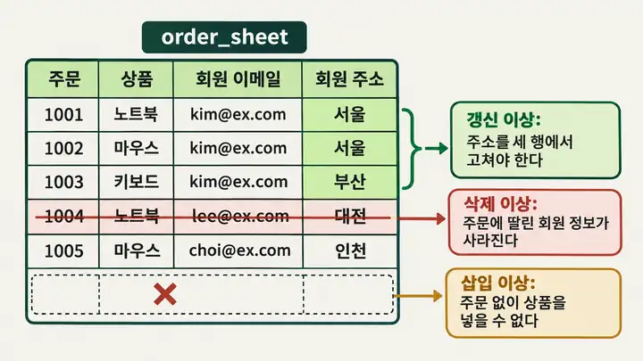
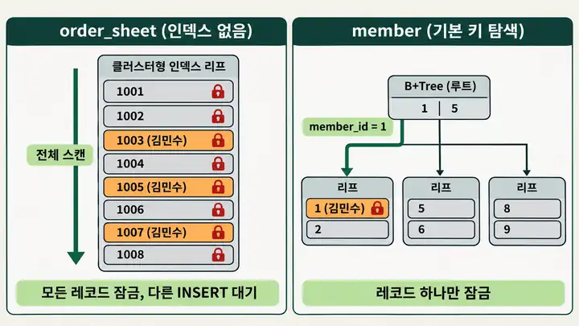
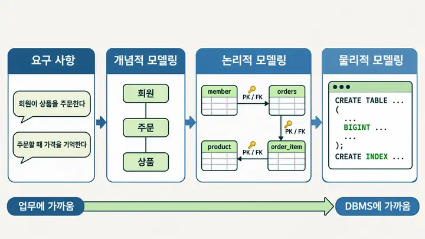
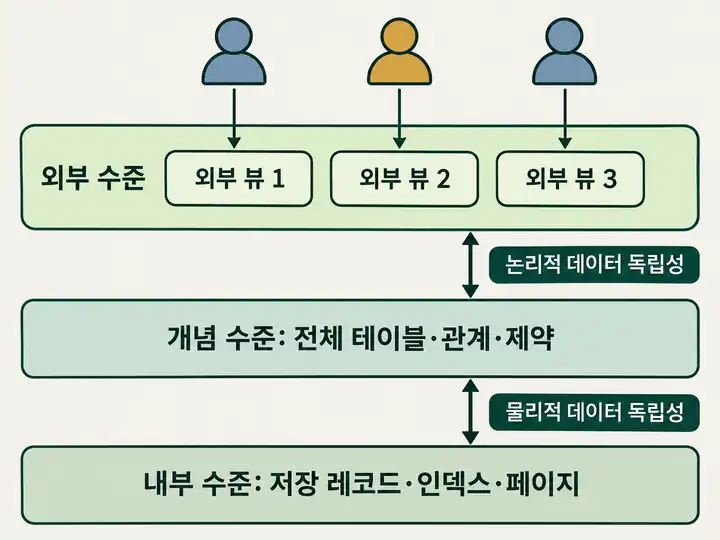

데이터베이스 설계 1편 / 01회
설계의 중요성
같은 사실을 여러 행에 되풀이해 적은 테이블이 갱신·삽입·삭제 때 데이터를 어떻게 망가뜨리고 엔진에 어떤 비용을 남기는지 추적하고, 그 실수를 개념·논리·물리 3단계 설계로 미리 막는 원리를 세운다.
오늘 끝나면 할 수 있는 것
- 회원·상품·주문 정보를 한 테이블에 함께 담은 설계에서 갱신 이상, 삽입 이상, 삭제 이상이 각각 어떤 SQL에서 어떻게 일어나는지 행 단위로 추적하고, 테이블을 나눈 설계에서 같은 작업이 어떻게 달라지는지 설명할 수 있다.
- "주문 당시 가격"과 "상품의 현재 가격", "배송지"와 "회원의 현재 주소"처럼 겉보기에 같은 값이 서로 다른 사실이라는 것을 구별하고, 그 구별이 왜 설계 단계에서 정해져야 하는지 말할 수 있다.
- 쉼표로 이은 목록, 문자열 날짜, 실수형 금액, 범위가 작은 정수형 기본 키가 각각 인덱스·무결성·동시성·변경 비용에서 어떤 대가를 남기는지 MySQL 8.0 InnoDB 기준으로 설명할 수 있다.
- 개념적·논리적·물리적 모델링이 각각 무엇을 결정하고 무엇을 다음 단계로 미루는지 구분하고, 각 단계의 산출물이 의존하는 대상(업무, 관계형 모델, 특정 DBMS와 작업 부하)을 짝지을 수 있다.
- 데이터 독립성과 ANSI/SPARC 3단계 스키마의 관점에서 설계 단계를 나누는 이유를 설명하고, 나중에 스키마를 바꿀 때 ALTER TABLE이 INSTANT, INPLACE, COPY 가운데 무엇으로 실행되는지가 비용을 가른다는 것을 예로 들 수 있다.
핵심 강의 → 핵심 요약 → 실무 재판단 → 적용 연습 → 이해 확인
01 핵심 강의
이 강의의 차례 · 소제목 14개
- 이 회차의 질문: 테이블을 만들기 전에 무엇을 정해야 하는가
- 데이터베이스 설계의 첫걸음: 현실에서 무엇을 기록할지 고르는 일
- 스키마는 가장 오래 사는 코드다
- 잘못된 설계 1: 한 표에 다 담으면 생기는 세 가지 이상 현상
- 고친 설계: 사실 하나는 한 곳에
- 잘못된 설계 2: 한 칸에 여러 값
- 잘못된 설계 3: 의미를 담지 못한 자료형
- 한 층 아래: 잘못된 설계가 엔진에 남기는 비용
- 나중에 고치는 비용: ALTER TABLE과 데이터 이관
- 설계의 3단계: 개념, 논리, 물리
- 같은 요구 사항이 세 단계를 지나는 모습
- 왜 단계를 나누는가: 데이터 독립성과 3단계 스키마
- 흔한 오해와 함정
- 정리: 이 권의 지도
이 회차의 질문: 테이블을 만들기 전에 무엇을 정해야 하는가
데이터베이스 입문과 기본편에서 우리는 대부분 이미 만들어진 테이블에 SQL을 던졌다. CREATE TABLE을 써 보기는 했지만, 그 테이블이 왜 하필 그런 모양이어야 하는지는 묻지 않았다. 실제 프로젝트에서 테이블은 주어지지 않는다. 누군가 "회원이 상품을 주문하고, 주문을 취소할 수 있고, 월별 매출을 보고 싶다"는 요구 사항을 들고 오면, 그 문장들을 몇 개의 테이블과 몇 개의 컬럼과 몇 개의 규칙으로 바꿀지 누군가는 정해야 한다. 이 권은 그 결정을 다룬다.
이 결정이 어려운 이유는 그럴듯해 보이는 설계가 여러 개이기 때문이다. 주문 화면에 보이는 정보를 그대로 컬럼으로 옮겨 테이블 하나를 만들어도 첫날에는 잘 동작한다. INSERT도 되고 SELECT도 되고, 화면도 잘 그려진다. 문제는 데이터가 쌓이고, 회원이 이사하고, 상품 가격이 바뀌고, 주문이 취소되기 시작하면서 드러난다. 그때 드러나는 문제는 쿼리를 고쳐서는 해결되지 않는다. 테이블의 모양 자체가 원인이기 때문이다. 그리고 그 시점에는 이미 그 모양대로 쌓인 데이터가 있다.
이 회차는 세 가지 질문에 차례로 답한다. 첫째, 데이터베이스 설계란 정확히 무엇을 결정하는 일인가. 둘째, 그 결정을 잘못하면 데이터와 엔진에 구체적으로 어떤 일이 일어나는가. 이 질문에는 MySQL 8.0 InnoDB에서 실제로 실행되는 SQL과 잠금, 페이지, ALTER TABLE의 동작으로 답한다. 셋째, 그 결정을 어떤 순서로 내려야 실수를 줄일 수 있는가. 셋째 질문의 답이 개념적·논리적·물리적 모델링이라는 3단계이고, 이 권의 나머지 여덟 회차는 그 단계를 하나씩 밟아 간다.
데이터베이스 설계의 첫걸음: 현실에서 무엇을 기록할지 고르는 일
데이터베이스는 현실의 일부를 기록한다. 온라인 쇼핑몰의 데이터베이스에는 회원, 상품, 주문이 기록되지만 회원의 키나 상품을 포장한 직원의 기분은 기록되지 않는다. 무엇을 기록하고 무엇을 버릴지는 저절로 정해지지 않는다. 그 데이터로 무엇을 할 것인가, 즉 업무가 정한다. 이렇게 현실에서 필요한 부분만 골라 정해진 구조로 표현한 것을 데이터 모델(data model)이라 하고, 그것을 만드는 과정을 데이터 모델링(data modeling)이라 한다. 데이터베이스 설계(database design)는 데이터 모델링의 결과를 실제 DBMS의 스키마, 즉 테이블과 컬럼과 제약 조건과 인덱스의 정의로 확정하는 일까지를 포함한다.
모델이 담는 세 가지
데이터 모델은 세 종류의 정보를 담는다. 첫째는 무엇이 존재하는가다. 회원, 상품, 주문처럼 업무에서 하나하나 구별해 기억해야 하는 대상이다. 다음 회차에서 이것을 엔티티(entity)라는 이름으로 정식으로 다룬다. 둘째는 그 대상에 대해 무엇을 아는가다. 회원의 이메일과 주소, 상품의 이름과 가격 같은 속성(attribute)이 여기에 속한다. 셋째는 대상들이 서로 어떻게 연결되는가, 그리고 그 연결과 값이 지켜야 할 규칙이다. "주문은 반드시 회원 한 명이 한다", "한 주문에는 상품이 하나 이상 들어 있다", "수량은 1 이상이다" 같은 규칙이 여기에 속한다.
세 번째를 빠뜨리기 쉽다. 테이블 목록과 컬럼 목록이 나오면 설계가 끝났다고 느끼기 쉽지만, 규칙이 모델에 적혀 있지 않으면 그 규칙은 애플리케이션 코드 여기저기에 흩어진다. 데이터베이스 기본편 7회차에서 보았듯이 애플리케이션의 "먼저 조회하고 없으면 넣는" 검사는 동시 요청과 배치·수작업 SQL 같은 다른 쓰기 경로 앞에서 뚫린다. 규칙을 모델에 적어 두어야 그것을 기본 키, 외래 키, NOT NULL, UNIQUE, CHECK 같은 제약 조건으로 옮겨 모든 쓰기 경로에 똑같이 적용할 수 있다. 설계는 "무엇을 저장할 것인가"를 정하는 일이면서 동시에 "무엇을 저장하지 못하게 할 것인가"를 정하는 일이다.
모델은 선택이다
같은 현실을 두고도 모델은 여러 개 나올 수 있다. 회원의 주소를 문자열 하나로 기록할 수도 있고, 시·도, 시·군·구, 상세 주소로 나눠 기록할 수도 있다. 어느 쪽이 옳은지는 업무가 주소를 어떻게 쓰는지에 달려 있다. 주소를 배송 라벨에 찍기만 한다면 문자열 하나로 충분하다. 지역별 매출을 집계해야 한다면 시·도를 따로 기록해야 집계가 문자열을 잘라 내는 함수 없이 GROUP BY 한 줄로 끝나고, 그 컬럼에 인덱스도 걸 수 있다. 모델링의 첫걸음은 기술이 아니라 질문이다. 이 데이터로 누가 어떤 질문을 던질 것인가, 그리고 어떤 사실이 언제 바뀌는가.
"언제 바뀌는가"라는 질문이 특히 중요하다. 이 회차 뒤쪽에서 보겠지만 잘못된 설계의 상당수는 바뀌는 주기가 다른 사실들을 한 행에 묶어 둔 데서 생긴다. 회원의 주소는 이사할 때 바뀌고, 상품 가격은 가격 정책이 바뀔 때 바뀌고, 주문 수량은 주문이 만들어진 뒤로 바뀌지 않는다. 이 세 사실을 한 행에 함께 적으면, 그중 하나가 바뀔 때마다 나머지 둘과 함께 적힌 모든 행을 건드려야 한다.
스키마는 가장 오래 사는 코드다
설계가 왜 그렇게 중요한가. 애플리케이션 코드는 잘못 짰으면 고쳐서 다시 배포하면 된다. 스키마도 ALTER TABLE로 고치면 되지 않는가. 이 반문에 답하려면 스키마가 애플리케이션 코드와 무엇이 다른지 짚어야 한다. 차이는 네 가지다.
- 데이터는 코드보다 오래 산다. 애플리케이션은 몇 년마다 프레임워크를 바꾸거나 통째로 다시 작성되기도 하지만, 그 사이에 쌓인 주문 기록은 그대로 남아 새 애플리케이션으로 넘어간다. 첫 애플리케이션이 정한 테이블 모양은 그 뒤의 모든 애플리케이션이 물려받는 전제가 된다.
- 스키마에는 여러 소비자가 붙는다. 주문 서비스, 정산 배치, 통계 대시보드, 운영자의 SQL이 같은 테이블을 읽는다. 컬럼 하나의 의미를 바꾸면 그 컬럼을 읽는 모든 코드를 찾아 함께 바꿔야 한다. 자바 메서드의 시그니처를 바꾸면 컴파일러가 호출하는 곳을 모두 오류로 알려 주지만, SQL 문자열 안의 컬럼 이름이나 다른 팀의 배치 코드는 컴파일러가 보지 못한다.
- 스키마 변경의 비용은 데이터 양에 비례할 수 있다. 코드 수정의 비용은 코드의 크기에 비례하지만, 컬럼의 자료형을 바꾸는 ALTER TABLE은 MySQL InnoDB에서 테이블 전체를 새로 복사해 다시 만들고 그동안 다른 쓰기를 막는다. 10행일 때 순식간에 끝나던 변경이 수억 행에서는 서비스 점검 공지가 필요한 작업이 된다. 이 비용은 뒤에서 MySQL 매뉴얼의 온라인 DDL 표를 근거로 자세히 본다.
- 잘못 들어간 데이터는 스키마를 고쳐도 남는다. 같은 회원의 주소가 행마다 다르게 적혀 있다면, 테이블을 나누는 순간 "어느 주소가 진짜인가"를 누군가 판단해야 한다. 스키마 변경은 기계가 하지만, 오염된 데이터의 정리는 업무 판단이 필요하고 자동화하기 어렵다.
관계형 모델의 출발점으로 꼽히는 E. F. Codd의 1970년 논문 「A Relational Model of Data for Large Shared Data Banks」(Communications of the ACM 13권 6호)는 대형 공유 데이터 뱅크의 사용자가 데이터가 기계 안에서 어떻게 조직되어 있는지 알지 않아도 되게 해야 한다는 문제의식에서 출발한다. Codd는 응용 프로그램이 데이터 유형의 증가와 데이터 표현의 변화로부터 영향을 받지 않는 성질을 데이터 독립성(data independence)이라 부르고, 당시 시스템에 남아 있던 의존성으로 순서 의존성, 인덱스 의존성, 접근 경로 의존성을 꼽았다. 이 논문에서 Codd는 인덱스를 정보의 관점에서는 데이터 표현의 중복된 구성 요소로 보았다. 인덱스를 만들거나 지워도 데이터가 담은 정보는 그대로라는 뜻이다. 이 생각은 뒤에서 설계를 세 단계로 나누는 이유를 설명할 때 다시 쓰인다.
잘못된 설계 1: 한 표에 다 담으면 생기는 세 가지 이상 현상
추상적인 이야기는 여기까지 하고, 실제로 잘못된 설계 하나를 만들어 망가뜨려 보자. 주문 내역 화면에 보이는 정보를 그대로 컬럼으로 옮겨 테이블 하나를 만든다. 주문 한 건에 상품이 여러 개 담길 수 있으므로 행 하나는 "주문 안의 상품 한 줄", 즉 주문 항목 하나를 나타내고, 기본 키는 (주문 번호, 상품 코드)로 한다. 예제는 MySQL 8.0 기준이다.
CREATE TABLE order_sheet (
order_id BIGINT NOT NULL,
product_code VARCHAR(20) NOT NULL,
ordered_at DATETIME NOT NULL,
member_email VARCHAR(100) NOT NULL,
member_name VARCHAR(50) NOT NULL,
member_address VARCHAR(200) NOT NULL,
product_name VARCHAR(100) NOT NULL,
unit_price INT NOT NULL,
quantity INT NOT NULL,
PRIMARY KEY (order_id, product_code)
);
INSERT INTO order_sheet VALUES
(1001, 'P-01', '2024-03-02 10:15:00', 'kim@x.kr', '김민수', '서울시 마포구', '무선 마우스', 25000, 1),
(1001, 'P-02', '2024-03-02 10:15:00', 'kim@x.kr', '김민수', '서울시 마포구', '키보드', 48000, 1),
(1002, 'P-01', '2024-03-05 14:40:00', 'lee@x.kr', '이서연', '부산시 해운대구', '무선 마우스', 25000, 2),
(1003, 'P-03', '2024-03-09 09:05:00', 'kim@x.kr', '김민수', '서울시 마포구', '모니터 받침대', 32000, 1),
(1004, 'P-02', '2024-03-11 20:30:00', 'park@x.kr', '박지훈', '대전시 유성구', '키보드', 48000, 1);이 테이블은 화면을 그리기에 아주 편하다. 주문 번호 하나로 조회하면 주문 일시, 회원 이름과 주소, 상품 이름과 가격, 수량이 조인 없이 한 번에 나온다. 그런데 데이터를 자세히 보면 같은 정보가 여러 번 적혀 있다. 김민수의 이메일, 이름, 주소는 세 행에 적혀 있고, "무선 마우스"와 가격 25000은 두 행에, "키보드"와 48000도 두 행에 적혀 있다. 이 반복이 왜 문제인지, 데이터를 바꾸는 세 종류의 작업, 즉 갱신·삽입·삭제를 하나씩 해 보면서 확인하자. 각 작업에서 생기는 문제를 차례로 갱신 이상(update anomaly), 삽입 이상(insertion anomaly), 삭제 이상(deletion anomaly)이라 부른다.
갱신 이상: 한 사실을 여러 곳에서 고쳐야 한다
김민수가 서울시 성동구로 이사했다. 이 사실을 반영하려면 김민수가 등장하는 모든 행을 고쳐야 한다.
UPDATE order_sheet
SET member_address = '서울시 성동구'
WHERE member_email = 'kim@x.kr';Query OK, 3 rows affected (0.00 sec)
Rows matched: 3 Changed: 3 Warnings: 0회원 한 명의 주소 하나를 바꿨는데 행 세 개가 바뀌었다. 이 회원이 3년 동안 주문 항목 500개를 쌓았다면 행 500개가 바뀐다. 바뀌는 행의 수가 "바뀐 사실의 수"가 아니라 "그 사실이 복사된 횟수"에 비례한다는 점이 갱신 이상의 첫 번째 얼굴이다. 비용 문제는 뒤의 엔진 절에서 다시 보고, 여기서는 더 심각한 두 번째 얼굴을 보자.
마이페이지의 "주문 상세" 화면에 배송지 수정 기능이 있고, 그 기능을 만든 개발자가 화면에 보이는 주문 하나만 고치도록 코드를 짰다고 하자.
UPDATE order_sheet
SET member_address = '서울시 성동구'
WHERE order_id = 1003;
SELECT DISTINCT member_address
FROM order_sheet
WHERE member_email = 'kim@x.kr'
ORDER BY member_address;+---------------------+
| member_address |
+---------------------+
| 서울시 마포구 |
| 서울시 성동구 |
+---------------------+이제 김민수의 주소를 물으면 데이터베이스가 두 개를 답한다. 어느 쪽이 진짜인지 데이터베이스 안에는 판단할 근거가 없다. 주문 일시가 가장 늦은 행을 믿을 수도 있지만, 그것은 우리가 지금 사정을 알고 있기 때문에 세운 추측이지 데이터가 보장하는 규칙이 아니다. 같은 사실이 여러 곳에 적혀 있으면, 그 복사본들이 언제나 같은 값을 유지하도록 강제하는 장치가 스키마에 없다. 모든 쓰기 경로가 모든 복사본을 빠짐없이 고쳐 주기를 기대할 수밖에 없고, 그 기대는 위처럼 코드 한 줄로 깨진다. 이렇게 같은 사실의 복사본끼리 값이 어긋난 상태를 불일치(inconsistency)라고 한다.
한 칸에 두 가지 사실: unit_price는 무엇의 가격인가
이번에는 키보드 가격이 48000원에서 45000원으로 내렸다. 갱신 이상의 처방대로라면 키보드가 등장하는 모든 행을 고쳐야 한다. 그런데 그렇게 하면 무슨 일이 생기는지 3월 매출을 계산해 보자.
SELECT SUM(unit_price * quantity) AS march_sales
FROM order_sheet
WHERE ordered_at >= '2024-03-01' AND ordered_at < '2024-04-01';
-- 25000*1 + 48000*1 + 25000*2 + 32000*1 + 48000*1 = 203000
UPDATE order_sheet SET unit_price = 45000 WHERE product_code = 'P-02';
-- 같은 SELECT를 다시 실행하면
-- 25000*1 + 45000*1 + 25000*2 + 32000*1 + 45000*1 = 197000+-------------+
| march_sales |
+-------------+
| 203000 |
+-------------+
Query OK, 2 rows affected (0.00 sec)
Rows matched: 2 Changed: 2 Warnings: 0
+-------------+
| march_sales |
+-------------+
| 197000 |
+-------------+이미 끝난 3월의 매출이 203000원에서 197000원으로 바뀌었다. 1001번과 1004번 주문의 고객은 48000원을 냈는데, 데이터베이스는 이제 45000원을 냈다고 말한다. 과거가 다시 쓰인 것이다. 그렇다고 과거 행을 그대로 두면 이번에는 "키보드의 현재 가격"을 기록할 곳이 없다. 다음 주문이 들어오기 전까지 45000이라는 값은 데이터베이스 어디에도 없고, "가장 최근 주문 행의 가격"을 현재 가격으로 쓰는 쿼리는 지난번에 팔린 가격을 답할 뿐이다.
이 딜레마는 갱신 이상과 원인이 조금 다르다. unit_price라는 컬럼 하나에 서로 다른 두 사실이 섞여 있기 때문이다. 하나는 "이 주문에서 이 상품을 얼마에 팔았는가"이고, 다른 하나는 "이 상품은 지금 얼마인가"다. 앞의 것은 주문과 상품의 조합에 속한 사실이라 주문이 만들어진 뒤로 바뀌지 않는다. 뒤의 것은 상품에만 속한 사실이라 가격 정책에 따라 바뀐다. 두 사실은 처음 주문이 들어오는 순간에는 우연히 값이 같다. 그래서 하나의 컬럼으로 충분해 보인다. 하지만 바뀌는 주기가 다르므로 시간이 지나면 반드시 갈라진다. 설계 단계에서 "이 값은 무엇에 대한 사실인가"를 묻지 않으면 이런 컬럼이 만들어진다.
삽입 이상: 기록하고 싶은 사실을 넣을 자리가 없다
다음 달부터 팔 신상품 "웹캠"(P-04, 59000원)을 미리 등록하려 한다. order_sheet에서 상품 정보는 주문 항목 행 안에만 존재한다. 그런데 이 테이블의 기본 키는 (order_id, product_code)이고, 기본 키 컬럼은 NULL을 가질 수 없다. 아직 아무도 주문하지 않은 상품에는 order_id로 넣을 값이 없으므로, order_id에 NULL을 넣는 INSERT는 1048 오류로 거부된다. MySQL 8.0.46과 8.4.13에서 INSERT INTO order_sheet (order_id, product_code, product_name, unit_price) VALUES (NULL, 'P-04', '웹캠', 59000)을 실행하면 ERROR 1048 (23000): Column 'order_id' cannot be null이 나온다. 주문 일시, 회원 이메일, 회원 이름도 모두 NOT NULL이니 채울 값이 없기는 마찬가지다.
이것이 삽입 이상이다. 기록하고 싶은 사실(상품이 존재한다)이 있는데, 그 사실과 무관한 다른 사실(누군가 그것을 주문했다)이 함께 있어야만 행을 만들 수 있다. 아직 주문하지 않은 신규 회원을 등록할 때도 같은 일이 일어난다. 현장에서는 이 벽을 넘기 위해 order_id에 0 같은 가짜 주문 번호를 넣는 우회가 등장하곤 한다. 그 순간부터 "주문 건수"를 세는 모든 쿼리는 가짜 주문을 걸러 내는 조건을 기억해야 하고, 하나라도 잊으면 통계가 틀어진다. 스키마가 표현하지 못하는 사실을 억지로 넣으면 그 대가는 그 테이블을 읽는 모든 쿼리가 나눠서 치른다.
삭제 이상: 지우고 싶지 않은 사실까지 사라진다
이서연이 1002번 주문을 취소했고, 업무 규칙상 취소된 주문은 지운다고 하자.
DELETE FROM order_sheet WHERE order_id = 1002; -- 1 row affected
SELECT member_name, member_address
FROM order_sheet
WHERE member_email = 'lee@x.kr'; -- Empty set주문 하나를 지웠을 뿐인데 이서연이라는 회원이 존재했다는 사실과 그 주소까지 데이터베이스에서 사라졌다. 이서연의 주문이 1002번 하나뿐이었기 때문이다. 같은 일이 상품에도 일어난다. 1003번 주문을 지우면 "모니터 받침대"(P-03)를 담은 행이 하나도 남지 않으므로, 그 상품의 이름과 가격도 함께 사라진다. 삭제 이상은 삽입 이상의 거울상이다. 서로 다른 사실이 한 행에 묶여 있으니, 그중 하나를 없애려고 행을 지우면 나머지 사실도 함께 없어진다.
세 이상 현상의 공통 원인
세 현상을 나란히 놓으면 원인이 하나로 모인다. order_sheet의 행 하나에는 서로 다른 대상에 속한 사실들이 함께 적혀 있다. 각 컬럼이 실제로 무엇에 의해 정해지는지 그려 보면 그 구조가 보인다.
order_sheet 의 한 행 (order_id, product_code) ──► quantity, unit_price(판매 당시 가격) order_id ──► ordered_at, member_email member_email ──► member_name, member_address product_code ──► product_name, (상품의 현재 가격은 기록할 곳이 없음) 기본 키 전체에 의해 정해지는 컬럼 : quantity, unit_price 기본 키의 일부에 의해 정해지는 컬럼 : ordered_at, member_email, product_name 키가 아닌 컬럼을 거쳐 정해지는 컬럼 : member_name, member_address
화살표 왼쪽의 값이 정해지면 오른쪽 값이 하나로 정해진다는 뜻이다. 회원 이메일이 정해지면 이름과 주소가 정해지고, 상품 코드가 정해지면 상품 이름이 정해진다. 그런데 이 테이블의 행은 (주문, 상품) 조합마다 하나씩 생긴다. 그러니 "회원 이메일 → 주소"라는 사실은 그 회원이 주문한 항목 수만큼, "상품 코드 → 상품 이름"이라는 사실은 그 상품이 팔린 횟수만큼 복사된다. 복사본이 여러 개이니 갱신 이상이 생기고, 주문 없이는 행이 없으니 삽입 이상이 생기고, 마지막 주문이 사라지면 사실도 사라지니 삭제 이상이 생긴다. 이 "값이 다른 값을 정한다"는 관계를 함수 종속성(functional dependency)이라 하고, 그것을 근거로 테이블을 나누는 절차가 정규화(normalization)다. 7회차에서 정식으로 다룬다. 지금은 "행 하나에는 그 행의 키가 정하는 사실만 적는다"는 직관이면 충분하다.

고친 설계: 사실 하나는 한 곳에
원인을 알았으니 처방은 분명하다. 서로 다른 대상에 속한 사실을 각자의 테이블로 나누고, 테이블 사이의 연결은 키 값으로 표현한다. 회원에 대한 사실은 회원 테이블에, 상품에 대한 사실은 상품 테이블에, 주문 한 건에 대한 사실은 주문 테이블에, 주문과 상품의 조합에 대한 사실은 주문 항목 테이블에 둔다. 주문 테이블 이름을 orders로 한 것은 ORDER가 MySQL의 예약어이기 때문이다.
CREATE TABLE member (
member_id BIGINT NOT NULL AUTO_INCREMENT,
email VARCHAR(100) NOT NULL,
name VARCHAR(50) NOT NULL,
address VARCHAR(200) NOT NULL,
PRIMARY KEY (member_id),
UNIQUE KEY uk_member_email (email)
);
CREATE TABLE product (
product_code VARCHAR(20) NOT NULL,
name VARCHAR(100) NOT NULL,
price INT NOT NULL, -- 상품의 현재 가격
PRIMARY KEY (product_code)
);
CREATE TABLE orders (
order_id BIGINT NOT NULL,
member_id BIGINT NOT NULL,
ordered_at DATETIME NOT NULL,
PRIMARY KEY (order_id),
CONSTRAINT fk_orders_member FOREIGN KEY (member_id) REFERENCES member (member_id)
);
CREATE TABLE order_item (
order_id BIGINT NOT NULL,
product_code VARCHAR(20) NOT NULL,
order_price INT NOT NULL, -- 이 주문에서 판매한 가격
quantity INT NOT NULL,
PRIMARY KEY (order_id, product_code),
CONSTRAINT fk_item_order FOREIGN KEY (order_id) REFERENCES orders (order_id),
CONSTRAINT fk_item_product FOREIGN KEY (product_code) REFERENCES product (product_code)
);앞의 다섯 행을 이 구조로 옮기면 회원 3행(김민수 1, 이서연 2, 박지훈 3), 상품 3행(P-01, P-02, P-03), 주문 4행(1001~1004), 주문 항목 5행이 된다. 김민수의 주소는 이제 member 테이블의 한 행에 단 한 번 적힌다. "무선 마우스"라는 이름도 product 테이블에 한 번만 적힌다. 주문 항목 행에 남은 것은 다른 테이블을 가리키는 키 값(order_id, product_code)과, 정말로 그 조합에 속한 사실(order_price, quantity)뿐이다. 앞 절에서 망가뜨린 작업들을 같은 순서로 다시 해 보자.
| 작업 | order_sheet 한 테이블 | 나눈 설계 |
|---|---|---|
| 김민수 이사 | 김민수의 주문 항목 수만큼 행을 고쳐야 하고, 하나라도 빠지면 주소가 둘이 된다. | UPDATE member SET address = ... WHERE member_id = 1 한 행. 주소가 한 곳에만 있으니 어긋날 복사본이 없다. |
| 키보드 가격 인하 | 모든 행을 고치면 과거 매출이 바뀌고, 고치지 않으면 현재 가격을 기록할 곳이 없다. | UPDATE product SET price = 45000 WHERE product_code = 'P-02' 한 행. order_item의 order_price는 그대로이므로 3월 매출은 203000원으로 남는다. |
| 신상품 등록 | 주문 번호가 없어 1048 오류. 가짜 주문을 만들어야 한다. | INSERT INTO product VALUES ('P-04', '웹캠', 59000). 상품은 주문과 무관하게 존재할 수 있다. |
| 신규 회원 가입 | 주문 없이는 넣을 수 없다. | member에 한 행을 넣는다. |
| 1002번 주문 취소 | 이서연의 정보가 함께 사라진다. | order_item에서 1002번 항목을, orders에서 1002번 주문을 지운다. member의 이서연 행은 남는다. |
마지막 줄의 삭제 순서에 주의하자. order_item이 orders를 외래 키로 참조하고 있으므로, 부모인 orders의 행을 먼저 지우면 InnoDB는 자식이 있다는 이유로 1451 오류를 내며 거부한다. MySQL 8.0.46에서 DELETE FROM orders WHERE order_id = 1002를 먼저 실행하면 ERROR 1451 (23000): Cannot delete or update a parent row: a foreign key constraint fails (`m_db_design1_01`.`order_item`, CONSTRAINT `fk_item_order` FOREIGN KEY (`order_id`) REFERENCES `orders` (`order_id`))가 나오고(데이터베이스 이름은 실습 환경의 것), order_item의 1002번 항목을 지운 뒤에는 같은 DELETE가 성공하며 member의 이서연 행은 그대로 남는다. 기본편 7회차에서 본 참조 무결성 검사다. 테이블을 나누면 이렇게 테이블 사이의 규칙을 엔진에 맡길 수 있다는 점도 얻는다. order_sheet에서는 "주문 항목의 회원 이메일은 실제 회원이어야 한다"는 규칙을 표현할 방법이 없었다. 회원이라는 테이블 자체가 없었기 때문이다.
같아 보이는 값이 모두 중복은 아니다
여기서 중요한 함정이 하나 있다. 나눈 설계에서 주문 내역 화면에 member.address를 조인해 보여 준다고 하자. 김민수가 이사하면 3월에 배송된 1001번 주문의 상세 화면에도 새 주소가 찍힌다. 실제로 그 상품이 배송된 곳은 마포구인데 말이다. 이 문제는 앞의 가격 문제와 같은 구조다. "회원의 현재 주소"와 "이 주문의 배송지"는 주문하는 순간 값이 같을 뿐 서로 다른 사실이다. 배송지가 업무에 필요하다면 orders 테이블에 배송지 컬럼을 따로 두어야 하고, 이것은 중복이 아니라 다른 사실을 기록하는 것이다.
반대 방향의 오해도 있다. order_item의 product_code는 product 테이블에도 있고 order_item에도 여러 번 나온다. 이것도 중복일까? 아니다. order_item의 product_code는 상품에 대한 사실이 아니라 "이 주문 항목이 어느 상품을 가리키는가"라는 참조다. 참조 값은 가리키는 행이 바뀌어도 같이 바뀔 필요가 없고(상품 이름이 바뀌어도 코드는 그대로다), 외래 키가 그 참조가 유효한지 지켜 준다. 정리하면, 같은 값이 여러 번 나오는 것 자체가 문제가 아니다. 같은 사실이 여러 번 기록되는 것이 문제다. 둘을 가르는 질문은 언제나 같다. 이 값은 무엇에 대한 사실이고, 언제 바뀌는가.
나눈 대가: 읽을 때 다시 모아야 한다
공짜는 아니다. order_sheet에서는 주문 하나의 내역이 행 몇 개를 읽으면 끝났지만, 이제는 네 테이블을 조인해야 한다.
SELECT o.order_id, o.ordered_at, m.name, p.name AS product_name,
i.order_price, i.quantity
FROM orders o
JOIN member m ON m.member_id = o.member_id
JOIN order_item i ON i.order_id = o.order_id
JOIN product p ON p.product_code = i.product_code
WHERE o.order_id = 1001;기본편 1회차에서 본 것처럼 이런 조인은 조인 열에 인덱스가 있으면 행마다 B+Tree를 몇 단계 내려가는 탐색으로 처리된다. 여기서는 모든 조인 조건이 상대 테이블의 기본 키로 이어지므로 탐색 비용이 작다. 그래도 조회가 압도적으로 많고 변경이 드문 데이터라면, 일부러 사실을 복사해 두어 조인을 줄이는 선택이 나올 수 있다. 이것을 반정규화(denormalization)라 하고, 8회차의 물리적 모델링에서 다룬다. 중요한 순서는 이렇다. 먼저 사실을 한 곳에 두는 설계를 만들고, 그다음 측정된 근거가 있을 때 어떤 사실을 어디에 복사할지, 그리고 복사본을 누가 어떻게 맞출지를 정한다. 처음부터 한 테이블에 몰아넣은 설계는 반정규화가 아니라 그냥 정리되지 않은 설계다.
잘못된 설계 2: 한 칸에 여러 값
두 번째로 흔한 실수는 컬럼 하나에 값 여러 개를 넣는 것이다. 회원이 관심 있는 상품 카테고리를 여러 개 고를 수 있게 하면서, 그 목록을 쉼표로 이어 한 컬럼에 저장한다고 하자. 자바 코드에서는 String.join(",", ids) 한 줄로 저장되고 split(",") 한 줄로 읽히니 편해 보인다.
CREATE TABLE member_pref (
member_id BIGINT NOT NULL,
category_ids VARCHAR(100) NOT NULL, -- 예: '3,7,12'
PRIMARY KEY (member_id)
);
INSERT INTO member_pref VALUES (1, '3,7,12'), (2, '17,4'), (3, '7'), (4, '2,27');"카테고리 7에 관심 있는 회원"을 찾아 보자. 정답은 회원 1과 3이다. 가장 먼저 떠오르는 쿼리는 LIKE다.
SELECT member_id FROM member_pref WHERE category_ids LIKE '%7%';
-- 결과: 1, 2, 3, 4 ('17'과 '27'에도 문자 7이 들어 있다)
-- MySQL 8.0.46·8.4.13에서 실행해 확인네 명이 모두 나왔다. 데이터베이스는 '17'을 숫자 17로 보지 않고 문자 '1'과 '7'의 나열로 본다. 구분자를 넣어 LIKE '%,7,%'로 바꾸면 이번에는 목록의 맨 앞이나 맨 뒤에 있는 7(회원 3의 '7')을 놓친다. 목록 앞뒤에 쉼표를 붙여 저장하는 규칙을 따로 만들면 해결되지만, 그 규칙은 스키마 어디에도 적혀 있지 않고 모든 쓰기 코드가 지켜 주기를 기대할 뿐이다. MySQL에는 이런 쉼표 목록을 다루는 FIND_IN_SET 함수가 있다. 매뉴얼에 따르면 이 함수는 쉼표로 구분된 문자열 목록에서 첫 번째 인자가 몇 번째 원소인지 1부터 N 사이의 값으로 돌려주고, 없으면 0을 돌려준다.
SELECT member_id FROM member_pref WHERE FIND_IN_SET('7', category_ids) > 0;
-- 결과: 1, 3 ('3,7,12'에서 2번째, '7'에서 1번째. '17,4'의 원소는 '17'과 '4'이므로 0)결과는 맞게 나왔지만 문제는 끝나지 않았다. 원소 단위로 생기는 문제를 하나씩 보자.
- 인덱스를 쓸 수 없다. B+Tree 인덱스는 컬럼 값 전체를 정렬해 둔 구조다. '3,7,12'라는 값은 '3,'으로 시작하는 위치에 정렬되어 있을 뿐, 그 안에 7이 들어 있다는 사실은 정렬 순서에 드러나지 않는다. MySQL 매뉴얼은 LIKE의 인자가 와일드카드로 시작하지 않는 상수 문자열일 때만 B-tree 인덱스를 쓸 수 있다고 하고,
'%Patrick%'같은 패턴은 인덱스를 쓰지 않는 예로 든다. FIND_IN_SET처럼 컬럼을 함수로 감싼 조건도 입문편 5회차에서 본 이유로 인덱스 범위를 정하지 못한다. 결국 "카테고리 7의 관심 회원" 같은 질문은 회원 수가 얼마든 테이블 전체를 읽는다. - 원소 하나하나에 규칙을 걸 수 없다. 존재하지 않는 카테고리 999가 목록에 들어가도 외래 키로 막을 수 없다. 외래 키는 컬럼 값 전체가 부모의 키와 같은지를 검사하는데, '3,7,999'라는 문자열은 어떤 카테고리 키와도 같지 않다. 같은 카테고리가 두 번 들어간 '7,7'이나 빈 원소가 생긴 '3,,7'도 막지 못한다. 누군가 '3, 7, 12'처럼 공백을 넣어 저장하면 원소가 ' 7'이 되어
FIND_IN_SET('7', ...)이 그 회원을 찾지 못한다. - 원소 하나를 바꾸려면 전체를 다시 써야 한다. 회원 1이 카테고리 9를 추가하려면 '3,7,12'를 읽어 '3,7,12,9'를 만든 뒤 컬럼 전체를 덮어써야 한다. 이 "읽고, 고치고, 쓰기"를 애플리케이션에서 하면 기본편 8회차에서 본 갱신 손실(lost update)의 조건이 그대로 갖춰진다. 두 요청이 동시에 '3,7,12'를 읽고 하나는 9를, 하나는 5를 붙여 쓰면, InnoDB의 기본 격리 수준인 REPEATABLE READ에서 두 번째 UPDATE는 첫 번째의 행 잠금이 풀리기를 기다렸다가 자기가 만든 '3,7,12,5'로 덮어쓴다. 9는 사라진다.
- 집계가 문자열 처리가 된다. "카테고리별 관심 회원 수"를 구하려면 각 행의 문자열을 원소로 쪼개는 작업부터 SQL로 해야 한다. 목록의 최대 길이도 VARCHAR(100)이라는 바이트 수가 정하므로, 원소가 몇 개까지 들어갈 수 있는지는 원소의 자릿수에 따라 달라진다.
처방은 앞 절과 같다. "회원 m이 카테고리 c에 관심이 있다"는 사실 하나를 행 하나로 만든다.
CREATE TABLE member_category (
member_id BIGINT NOT NULL,
category_id BIGINT NOT NULL,
PRIMARY KEY (member_id, category_id),
KEY idx_category_member (category_id, member_id)
-- 실제 스키마라면 member, category 테이블로 가는 외래 키도 둔다
);
SELECT member_id FROM member_category WHERE category_id = 7; -- 인덱스 범위 탐색
INSERT INTO member_category VALUES (1, 9); -- 원소 추가 = 행 추가
SELECT category_id, COUNT(*) FROM member_category GROUP BY category_id;이제 각 원소가 독립된 행이므로 기본 키가 같은 카테고리의 중복을 막고, 외래 키가 존재하지 않는 카테고리를 막고, 보조 인덱스가 "카테고리 7의 회원" 질문을 인덱스 범위 탐색으로 바꾼다. 회원 1에게 9와 5를 동시에 추가하는 두 요청은 서로 다른 행 두 개를 INSERT할 뿐이라 서로의 결과를 덮어쓰지 않는다. 컬럼 값은 더 쪼갤 수 없는 하나의 값이어야 한다는 이 원칙이 제1정규형(1NF)의 핵심이고, 7회차에서 정식으로 다룬다. 다대다 관계를 이렇게 별도 테이블로 푸는 방법은 5회차의 주제다.
잘못된 설계 3: 의미를 담지 못한 자료형
테이블을 올바르게 나눴더라도 컬럼의 자료형(data type)이 값의 의미를 담지 못하면 비슷한 종류의 문제가 생긴다. 자료형은 단순한 저장 형식이 아니라 데이터베이스가 그 값에 대해 무엇을 검사하고 어떻게 비교할지를 정하는 계약이다. 자료형 선택은 8회차 물리적 모델링에서 본격적으로 다루므로, 여기서는 잘못 골랐을 때 무엇이 깨지는지 세 가지만 확인한다. 먼저 자바로 두 가지를 확인해 보자.
import java.math.BigDecimal;
public class TypeMeaning {
public static void main(String[] args) {
// 1. 날짜를 문자열로 다룰 때의 비교
String a = "2024-9-1";
String b = "2024-10-01";
System.out.println(a.compareTo(b));
// 2. 금액을 double로 더할 때
double d = 0.0;
for (int i = 0; i < 10; i++) {
d += 0.1;
}
System.out.println(d);
System.out.println(d == 1.0);
// 3. 금액을 10진 고정 소수로 더할 때
BigDecimal m = BigDecimal.ZERO;
for (int i = 0; i < 10; i++) {
m = m.add(new BigDecimal("0.1"));
}
System.out.println(m);
System.out.println(m.compareTo(BigDecimal.ONE) == 0);
}
}8
0.9999999999999999
false
1.0
true첫 줄부터 추적해 보자. String.compareTo는 두 문자열을 앞에서부터 한 문자씩 비교하다가 처음 다른 위치에서 두 문자의 차이를 돌려준다. 앞 다섯 문자 "2024-"는 같고, 여섯 번째에서 '9'(코드 57)와 '1'(코드 49)이 만나 57 − 49 = 8이 나온다. 양수이므로 "2024-9-1"이 "2024-10-01"보다 뒤에 정렬된다. 9월 1일이 10월 1일보다 늦은 날짜로 취급되는 것이다. 날짜를 VARCHAR 컬럼에 저장하면 MySQL도 같은 방식으로 문자를 차례로 비교하므로, 이 두 값에 대한 ORDER BY와 범위 조건 BETWEEN은 날짜 순서가 아니라 문자 순서를 따른다. "0을 채워 YYYY-MM-DD로만 저장한다"는 규칙을 지키면 문자 순서와 날짜 순서가 일치하지만, 그 규칙 역시 스키마가 강제하지 않는다. VARCHAR 컬럼은 '2024-02-30'도, '2024/03/01'도, '내일'도 받아들인다. 반면 DATE 컬럼은 값이 실제 날짜인지 검사한다. MySQL 8.0의 기본 SQL 모드에는 엄격 모드(STRICT_TRANS_TABLES)가 들어 있고, 매뉴얼에 따르면 엄격 모드에서 '2004-04-31' 같은 잘못된 날짜는 오류를 낸다. MySQL 8.0.46과 8.4.13에서 기본 SQL 모드 그대로 확인하면, SELECT '2024-9-1' > '2024-10-01'은 1(참)을 돌려주고, VARCHAR 컬럼에는 '2024-02-30', '2024/03/01', '내일'이 모두 들어가지만, DATE 컬럼에 '2004-04-31'을 넣는 INSERT는 ERROR 1292 (22007): Incorrect date value: '2004-04-31' for column 'd' at row 1로 거부된다(d는 실습용 DATE 컬럼 이름).
둘째와 셋째 결과는 금액의 문제다. double은 IEEE 754 이진 부동소수점 수이고, 10진수 0.1은 이진수로 정확히 표현되지 않는다. 그래서 0.1에 가장 가까운 이진 값을 열 번 더하면 오차가 쌓여 1.0이 아니라 0.9999999999999999가 되고, d == 1.0은 false다. BigDecimal은 10진 자릿수를 정수와 스케일(scale)로 정확히 표현하므로 0.1을 열 번 더하면 정확히 1.0이 된다. 출력이 "1"이 아니라 "1.0"인 것은 덧셈 결과의 스케일이 두 피연산자 스케일 중 큰 값(1)이 되기 때문이고, 그래서 값 비교에는 스케일까지 비교하는 equals가 아니라 compareTo를 썼다. MySQL에서도 같은 구분이 있다. 매뉴얼은 FLOAT와 DOUBLE이 근삿값(approximate value)을 나타내며 정확한 값으로 비교하려 하면 문제가 생길 수 있다고 경고하고, DECIMAL과 NUMERIC은 정확한 값을 저장하므로 금액처럼 정확한 정밀도가 중요한 데이터에 쓴다고 설명한다. 금액 컬럼을 DOUBLE로 만들면 합계가 원 단위에서 어긋나는 일을 스키마가 허용하는 셈이다.
세 번째 실수는 범위다. MySQL에서 INT는 4바이트이고 부호 있는 최댓값이 2147483647이다. BIGINT는 8바이트이고 최댓값이 263−1이다. 기본 키를 INT AUTO_INCREMENT로 만들면, 매뉴얼의 말대로 컬럼이 자료형의 상한에 이르는 순간 다음 번호 생성이 실패한다. MySQL 8.0.46과 8.4.13에서 INT AUTO_INCREMENT 기본 키에 2147483646을 직접 넣고 번호를 두 번 더 받아 보면, 첫 번째는 2147483647을 받지만 두 번째 INSERT는 다음 번호도 2147483647이 되어 ERROR 1062 (23000): Duplicate entry '2147483647' for key 'tint.PRIMARY'로 실패한다(tint는 실습용 테이블 이름). 하루에 많은 행이 쌓이는 로그성 테이블이라면 이 상한은 생각보다 가까울 수 있다. 상한에 가까워진 뒤에 INT를 BIGINT로 바꾸려 하면, 다음 절에서 보듯이 그 변경은 테이블 전체를 복사하고 그동안 쓰기를 막는 작업이 된다. 처음 만들 때 4바이트를 아끼려던 선택이 가장 바쁜 시점에 가장 비싼 변경으로 돌아오는 것이다.
한 층 아래: 잘못된 설계가 엔진에 남기는 비용
지금까지는 데이터의 정확성 문제를 보았다. 이번에는 같은 설계가 MySQL InnoDB 안에서 어떤 물리적 비용이 되는지 내려가 보자. 기본편과 입문편에서 다룬 엔진의 구조, 즉 페이지·버퍼 풀·클러스터형 인덱스·행 잠금·undo 로그를 그대로 가져와 order_sheet와 나눈 설계를 비교한다.
행이 넓어지면 페이지 하나에 담기는 행이 줄어든다
InnoDB는 테이블 데이터를 기본 키 순서로 정렬된 클러스터형 인덱스(clustered index)에 저장하고, 디스크와 메모리 사이를 오가는 단위는 페이지다. 페이지 크기는 innodb_page_size로 정해지며 기본값은 16KB다. 행이 넓어질수록 페이지 하나에 담기는 행의 수가 줄고, 같은 수의 행을 읽으려면 더 많은 페이지를 버퍼 풀로 가져와야 한다. 버퍼 풀의 크기는 고정되어 있으니 행이 넓을수록 메모리에 올라와 있는 행의 수도 줄어든다.
order_sheet의 행은 주문 항목마다 회원 이메일·이름·주소와 상품 이름을 함께 싣는다. UTF-8(MySQL 8.0의 기본 문자 집합인 utf8mb4)에서 한글 한 글자는 3바이트이므로, '김민수'는 9바이트, '서울시 마포구'는 공백 한 칸을 포함해 19바이트, 'kim@x.kr'은 8바이트다(MySQL 8.0.46·8.4.13에서 utf8mb4 연결로 LENGTH()를 실행해 확인한 값). 김민수의 행 하나가 회원에 대해 되풀이해 싣는 문자열만 36바이트이고, 각 가변 길이 컬럼의 길이 정보와 레코드 헤더는 따로 붙는다. 이 값은 예제의 짧은 주소 기준이고, 실제 주소는 대개 훨씬 길다. 단순한 곱셈으로 감을 잡아 보면, 주문 항목 1000만 행이 회원·상품 정보를 평균 100바이트씩 되풀이해 싣는다면 그 반복만으로 약 1GB가 된다. 이 1GB는 정보를 하나도 더하지 않는다. 같은 사실의 복사본일 뿐이다. 그런데 주문 항목을 범위로 읽는 모든 쿼리는 이 복사본이 섞인 페이지를 읽어야 하고, 버퍼 풀은 이 복사본을 담느라 다른 페이지를 내보낸다.
InnoDB에는 행 크기의 상한도 있다. MySQL 매뉴얼에 따르면 테이블의 내부 표현은 행 하나가 최대 65,535바이트로 제한되고, InnoDB에서 페이지 안에 저장되는 행의 최대 크기는 기본 16KB 페이지에서 8KB보다 조금 작다. 상한을 넘는 가변 길이 컬럼은 페이지 밖(off-page)에 따로 저장된다. "필요할 것 같은 정보를 전부 한 테이블에" 담는 설계는 이런 한계에 먼저 닿는다.
바뀌는 행의 수만큼 잠금과 로그가 생긴다
갱신 이상의 비용은 정확성에서 끝나지 않는다. 김민수의 이사를 반영하는 두 UPDATE가 엔진 안에서 하는 일을 비교해 보자.
[order_sheet] UPDATE ... WHERE member_email = 'kim@x.kr' member_email 에 인덱스가 없다 → 클러스터형 인덱스 전체를 처음부터 끝까지 스캔 → REPEATABLE READ: 스캔한 모든 레코드에 배타 넥스트 키 잠금 → 김민수 행 3개 수정: 행마다 undo 레코드 + redo 기록 → 커밋할 때까지 다른 회원의 주문 항목 INSERT 도 대기 [member] UPDATE ... WHERE member_id = 1 기본 키(고유 인덱스)로 행 하나를 찾는다 → 그 인덱스 레코드 하나에만 배타 잠금 → 행 1개 수정: undo 레코드 1개 + redo 기록 → 다른 회원의 행과 다른 테이블은 영향 없음
이 추적의 근거는 MySQL 매뉴얼의 InnoDB 잠금 설명이다. 매뉴얼에 따르면 잠금 읽기, UPDATE, DELETE는 일반적으로 SQL 문을 처리하면서 스캔한 모든 인덱스 레코드에 레코드 잠금을 건다. WHERE 조건에서 제외될 행인지와는 상관없다. InnoDB는 정확한 WHERE 조건을 기억하지 않고 어떤 인덱스 범위를 스캔했는지만 알기 때문이다. 그리고 문장에 맞는 인덱스가 없어 테이블 전체를 스캔해야 하면 테이블의 모든 행이 잠기고, 그 결과 다른 사용자의 모든 INSERT가 막힌다. 반대로 고유 인덱스로 유일한 행 하나를 찾는 문장은 그 인덱스 레코드 잠금만 필요하다. member 테이블의 UPDATE가 바로 그 경우다.
실제로 확인해 보자. 처음 다섯 행의 order_sheet와 나눈 설계의 member에서 각각 트랜잭션을 열고 UPDATE를 실행한 뒤, 커밋하기 전에 같은 세션에서 performance_schema.data_locks를 조회했다(SELECT object_name, index_name, lock_type, lock_mode, lock_data FROM performance_schema.data_locks WHERE object_schema = DATABASE() AND thread_id = PS_CURRENT_THREAD_ID()).
-- order_sheet: UPDATE ... WHERE member_email = 'kim@x.kr'
+-------------+------------+-----------+-----------+------------------------+
| object_name | index_name | lock_type | lock_mode | lock_data |
+-------------+------------+-----------+-----------+------------------------+
| order_sheet | NULL | TABLE | IX | NULL |
| order_sheet | PRIMARY | RECORD | X | 1001, 'P-01' |
| order_sheet | PRIMARY | RECORD | X | 1001, 'P-02' |
| order_sheet | PRIMARY | RECORD | X | 1002, 'P-01' |
| order_sheet | PRIMARY | RECORD | X | 1003, 'P-03' |
| order_sheet | PRIMARY | RECORD | X | 1004, 'P-02' |
| order_sheet | PRIMARY | RECORD | X | supremum pseudo-record |
+-------------+------------+-----------+-----------+------------------------+
-- member: UPDATE ... WHERE member_id = 1
+-------------+------------+-----------+---------------+-----------+
| object_name | index_name | lock_type | lock_mode | lock_data |
+-------------+------------+-----------+---------------+-----------+
| member | NULL | TABLE | IX | NULL |
| member | PRIMARY | RECORD | X,REC_NOT_GAP | 1 |
+-------------+------------+-----------+---------------+-----------+order_sheet에서는 김민수의 행 3개만 바뀌었는데(information_schema.innodb_trx의 trx_rows_modified가 3) 클러스터형 인덱스의 레코드 5개 전부와 끝을 나타내는 supremum 레코드까지 넥스트 키 잠금(lock_mode가 X)이 걸렸다. member에서는 기본 키 레코드 하나에만 간격을 포함하지 않는 레코드 잠금(X,REC_NOT_GAP)이 걸렸다. 첫 번째 트랜잭션이 커밋하지 않은 동안 다른 세션에서 박지훈의 새 주문 항목(1005번)을 INSERT하면 잠금을 기다리다가 innodb_lock_wait_timeout(실험에서는 세션 값 3초)이 지나 ERROR 1205 (HY000): Lock wait timeout exceeded; try restarting transaction으로 실패했다.
격리 수준에 따른 차이도 짚어 두자. 위 추적은 InnoDB의 기본 격리 수준인 REPEATABLE READ 기준이다. READ COMMITTED에서는 매뉴얼에 따르면 UPDATE와 DELETE가 실제로 바꾸거나 지우는 행의 잠금만 유지하고, 조건에 맞지 않는 행의 레코드 잠금은 WHERE 조건을 평가한 뒤 풀어 준다. 그래도 테이블 전체를 스캔하는 비용과, 스캔 도중에 잠시라도 잠금을 거는 일은 남는다. 그리고 어느 격리 수준이든 바뀌는 행의 수 자체는 줄지 않는다. 행이 바뀔 때마다 이전 값을 되돌리기 위한 undo 레코드와 장애 복구를 위한 redo 기록이 생기고, 바뀐 행들의 잠금은 커밋할 때까지 유지된다. 한 회원의 사실이 주문 항목 500개에 복사되어 있다면, 주소 변경 한 번이 행 500개의 잠금과 500개의 undo 레코드를 만든다. 설계 단계의 중복은 실행 단계의 잠금 범위와 로그 양으로 그대로 옮겨 온다.
그렇다면 order_sheet에 member_email 인덱스만 추가하면 해결될까? 전체 스캔과 전체 잠금은 사라진다. 인덱스로 김민수의 레코드 범위만 스캔하고 그 범위에만 잠금을 걸 수 있기 때문이다. 하지만 바뀌는 행이 복사본의 수만큼이라는 사실은 그대로이고, 주소가 둘로 갈라지는 불일치를 막지도 못한다. 인덱스는 같은 정보를 더 빨리 찾는 장치이지 정보를 한 곳에 모으는 장치가 아니다. 물리적 장치로 논리적 결함을 덮을 수는 없다.
기본 키의 크기는 모든 보조 인덱스에 복사된다
마지막으로 키 설계가 저장 공간에 미치는 영향을 하나 보자. MySQL 매뉴얼에 따르면 InnoDB의 보조 인덱스(secondary index) 레코드는 보조 인덱스에 지정한 컬럼과 함께 그 행의 기본 키 컬럼을 담는다. 보조 인덱스로 찾은 뒤 실제 행에 가려면 기본 키로 클러스터형 인덱스를 다시 탐색해야 하기 때문이다. 그래서 매뉴얼은 기본 키가 길면 보조 인덱스가 더 많은 공간을 쓰므로 짧은 기본 키가 유리하다고 말한다. order_sheet처럼 (BIGINT, VARCHAR(20))의 복합 기본 키를 둔 테이블에 보조 인덱스를 세 개 만들면, 세 인덱스의 모든 레코드가 이 복합 키 값을 함께 싣는다. 업무 의미가 담긴 값을 기본 키로 쓸지, 의미 없는 일련번호를 기본 키로 쓸지는 3회차에서 자연 키와 대리 키라는 주제로 다룬다. 그 판단에는 이런 물리적 결과도 들어간다.

나중에 고치는 비용: ALTER TABLE과 데이터 이관
잘못된 설계를 운영 3년 뒤에 고치기로 했다고 하자. order_sheet를 member, product, orders, order_item으로 나누는 작업은 SQL 몇 줄로 끝나지 않는다. 순서대로 따라가 보면 어디서 비용이 생기는지 보인다.
- 새 테이블 만들기member, product, orders, order_item을 CREATE TABLE로 만든다. 빈 테이블이니 여기까지는 싸다.
- 복사본 사이의 충돌 찾기같은 회원 이메일에 주소가 둘 이상인 경우처럼, 한 곳에 모으면 하나로 정해져야 할 사실이 여러 값으로 갈라져 있는지 찾는다.
- 충돌 해소어느 값이 진짜인지 업무 담당자가 판단한다. 데이터만으로는 판단할 수 없는 경우가 많다.
- 데이터 옮기기INSERT ... SELECT로 옮긴다. 수억 행이라면 나눠서 옮기며, 그동안에도 새 주문은 계속 들어온다.
- 읽기·쓰기 경로 전환order_sheet를 읽고 쓰던 모든 애플리케이션, 배치, 통계 쿼리를 새 테이블로 바꾼다. 전환 기간에는 두 구조가 같은 내용을 유지해야 한다.
2단계와 3단계가 이 작업의 진짜 비용이다. 앞에서 주소를 주문 하나에서만 고친 사건이 있었다면, 회원 테이블로 옮기는 INSERT는 이렇게 실패한다.
INSERT INTO member (email, name, address)
SELECT DISTINCT member_email, member_name, member_address
FROM order_sheet;
-- kim@x.kr 이 ('서울시 마포구')와 ('서울시 성동구') 두 행으로 나와
-- uk_member_email 에 걸려 ERROR 1062 (Duplicate entry)
-- 충돌을 미리 찾는 쿼리
SELECT member_email, COUNT(DISTINCT member_address) AS address_count
FROM order_sheet
GROUP BY member_email
HAVING COUNT(DISTINCT member_address) > 1;ERROR 1062 (23000): Duplicate entry 'kim@x.kr' for key 'member.uk_member_email'
+--------------+---------------+
| member_email | address_count |
+--------------+---------------+
| kim@x.kr | 2 |
+--------------+---------------+실패한 INSERT ... SELECT도 AUTO_INCREMENT 값은 소비한다. 실습에서 이 실패 뒤 충돌을 정리하고 다시 옮겼더니 회원 번호가 1, 2, 3이 아니라 4, 5, 6으로 매겨졌다.
UNIQUE 제약이 이관을 막아 준 것은 다행이다. 제약 없이 옮겼다면 회원이 두 명으로 늘어난 채 이관이 끝났을 것이다. 하지만 막아 준다고 해서 답을 알려 주지는 않는다. 상품의 현재 가격은 더 곤란하다. order_sheet 어디에도 그 사실이 기록되어 있지 않았으므로 데이터베이스 밖에서 찾아와야 한다. 그리고 누군가 과거 행의 unit_price를 일괄로 고친 적이 있다면, 그때 덮어쓴 판매 당시 가격은 어디서도 복원할 수 없다. 설계의 실수는 이렇게 정보 자체를 잃게 만들 수 있고, 잃은 정보는 스키마를 아무리 고쳐도 돌아오지 않는다.
ALTER TABLE은 무엇을 하느냐에 따라 비용이 전혀 다르다
테이블을 나누는 큰 수술이 아니라 컬럼 하나를 고치는 작은 수정은 어떨까. MySQL 8.0의 InnoDB는 ALTER TABLE을 세 가지 알고리즘 가운데 하나로 실행한다. INSTANT는 데이터 사전의 메타데이터만 바꾸고 테이블 데이터에는 손대지 않는다. INPLACE는 테이블 복사본을 따로 만들지 않고 엔진 안에서 작업하며, 작업에 따라 테이블을 내부적으로 다시 만들기도(rebuild) 한다. COPY는 새 정의로 빈 테이블을 만든 뒤 원래 테이블의 행을 한 줄씩 복사한다. 어떤 작업이 어떤 알고리즘을 쓸 수 있는지는 매뉴얼의 온라인 DDL 표에 정해져 있다. 이 회차와 관련 있는 줄만 옮기면 다음과 같다.
| 작업 (MySQL 8.0) | INSTANT | INPLACE | 테이블 재구성 | 작업 중 DML 허용 |
|---|---|---|---|---|
| 컬럼 추가 | 가능 (8.0.12부터 기본, 8.0.29부터 임의 위치) | 가능 | INSTANT면 없음 | 허용 |
| 보조 인덱스 추가 | 불가 | 가능 | 없음 | 허용 |
| VARCHAR 길이 늘리기 (길이 바이트 수가 그대로일 때) | 불가 | 가능 (메타데이터만 변경) | 없음 | 허용 |
| 컬럼을 NOT NULL로 바꾸기 | 불가 | 가능 | 있음 | 허용 |
| 외래 키 제약 추가 | 불가 | foreign_key_checks를 끈 경우에만 | 없음 | 허용 |
| 컬럼 자료형 변경 | 불가 | 불가 (COPY만) | 있음 | 불허 |
표를 읽으면 비용의 비대칭이 보인다. 컬럼을 뒤에 덧붙이는 일은 INSTANT로 메타데이터만 바꾸면 끝나므로 테이블 크기와 상관없이 빠르다. 다만 매뉴얼에 따르면 컬럼을 추가하거나 삭제하는 ALGORITHM=INSTANT 작업을 할 때마다 새 행 버전(row version)이 생기고, 허용되는 행 버전은 64개까지다. 한도에 이르면 INSTANT 작업이 거부되어 INPLACE나 COPY로 테이블을 다시 만들어야 하고, 테이블을 다시 만들면 행 버전 수는 0으로 돌아간다. 반면 앞 절에서 본 INT를 BIGINT로 바꾸는 일은 "컬럼 자료형 변경"이라 COPY만 가능하고, 테이블 전체를 새로 만드는 동안 다른 트랜잭션의 INSERT, UPDATE, DELETE를 허용하지 않는다.
VARCHAR 길이 늘리기에는 함정이 있다. InnoDB는 VARCHAR 값 앞에 길이를 적는데, 컬럼의 최대 바이트 수가 255 이하면 1바이트, 256 이상이면 2바이트를 쓴다. 매뉴얼은 최대 바이트 수가 256 미만인 컬럼을 256 이상으로 늘리는 변경은 INPLACE로 할 수 없고 COPY가 필요하다고 명시한다. 그리고 이 바이트 수는 문자 수가 아니라 문자 집합의 최대 바이트 길이로 계산된다. utf8mb4는 문자 하나에 최대 4바이트이므로 VARCHAR(50)은 최대 200바이트이고 VARCHAR(63)은 252바이트, VARCHAR(64)는 256바이트다. 즉 utf8mb4 테이블에서 이름 컬럼을 VARCHAR(50)에서 VARCHAR(60)으로 늘리는 일은 메타데이터만 바꾸지만, VARCHAR(100)으로 늘리는 일은 테이블 전체 복사가 된다. 겉보기에는 둘 다 "길이 조금 늘리기"인데 비용은 전혀 다르다.
외래 키 줄도 눈여겨볼 만하다. 설계 때 외래 키를 빼 두었다가 나중에 추가하려 하면, 기본 설정(foreign_key_checks 켜짐)에서는 COPY로만 실행된다. INPLACE로 하려면 검사를 꺼야 하는데, 검사를 끈 채 추가한 외래 키는 이미 들어 있는 고아 행을 확인하지 않는다. 처음부터 외래 키를 두었다면 고아 행은 애초에 들어오지 못했을 것이다.
표의 각 줄은 ALTER TABLE에 ALGORITHM과 LOCK을 명시해 보면 직접 확인할 수 있다. 요청한 방식으로 실행할 수 없으면 MySQL은 작업을 하지 않고 오류로 이유를 알려 준다. utf8mb4 테이블 t_ddl(id INT PRIMARY KEY, name VARCHAR(50), ...)과 그것을 참조할 t_child로 실행한 결과다.
ALTER TABLE t_ddl ADD COLUMN memo VARCHAR(100), ALGORITHM=INSTANT;
Query OK, 0 rows affected
ALTER TABLE t_ddl ADD INDEX idx_x (x), ALGORITHM=INSTANT;
ERROR 1845 (0A000): ALGORITHM=INSTANT is not supported for this operation. Try ALGORITHM=COPY/INPLACE.
ALTER TABLE t_ddl ADD INDEX idx_x (x), ALGORITHM=INPLACE, LOCK=NONE;
Query OK, 0 rows affected
ALTER TABLE t_ddl MODIFY name VARCHAR(63), ALGORITHM=INPLACE, LOCK=NONE; -- 252바이트
Query OK, 0 rows affected
ALTER TABLE t_ddl MODIFY name VARCHAR(64), ALGORITHM=INPLACE, LOCK=NONE; -- 256바이트
ERROR 1846 (0A000): ALGORITHM=INPLACE is not supported. Reason: Cannot change column type INPLACE. Try ALGORITHM=COPY.
ALTER TABLE t_ddl MODIFY id BIGINT NOT NULL, ALGORITHM=INPLACE;
ERROR 1846 (0A000): ALGORITHM=INPLACE is not supported. Reason: Cannot change column type INPLACE. Try ALGORITHM=COPY.
ALTER TABLE t_ddl MODIFY id BIGINT NOT NULL, ALGORITHM=COPY, LOCK=NONE;
ERROR 1846 (0A000): LOCK=NONE is not supported. Reason: COPY algorithm requires a lock. Try LOCK=SHARED.
ALTER TABLE t_child ADD CONSTRAINT fk_c FOREIGN KEY (pid) REFERENCES t_ddl (id), ALGORITHM=INPLACE;
ERROR 1846 (0A000): ALGORITHM=INPLACE is not supported. Reason: Adding foreign keys needs foreign_key_checks=OFF. Try ALGORITHM=COPY.VARCHAR(63)까지는 INPLACE로 끝나고 VARCHAR(64)에서 거부되는 경계, 자료형 변경이 INPLACE도 LOCK=NONE도 받아들이지 않는다는 점(COPY에는 최소 LOCK=SHARED가 필요하므로 그동안 쓰기가 막힌다), 외래 키 추가가 foreign_key_checks를 요구한다는 점이 모두 표와 같다. 같은 환경에서 VARCHAR(40)→VARCHAR(60), VARCHAR(30)→VARCHAR(50), 컬럼을 NOT NULL로 바꾸기도 ALGORITHM=INPLACE, LOCK=NONE으로 성공했다. 행 버전 한도도 확인했다. 컬럼을 ALGORITHM=INSTANT로 64번 추가하자 information_schema.innodb_tables의 total_row_versions가 64가 되었고, 65번째는 ERROR 4092 (HY000): Maximum row versions reached for table ... No more columns can be added or dropped instantly. Please use COPY/INPLACE.로 거부되었다. 이어서 ALGORITHM을 지정하지 않고 같은 컬럼을 추가하자 테이블을 다시 만들며 성공했고 total_row_versions는 0이 되었다.
온라인 DDL도 잠깐은 테이블을 독점한다
"작업 중 DML 허용"이 곧 "아무 영향 없음"은 아니다. 매뉴얼에 따르면 온라인 DDL은 시작할 때 공유 업그레이드 가능 메타데이터 잠금(metadata lock)을 잡고, 실행 단계의 준비 과정에서는 작업에 따라 필요한 경우에, 마지막에 새 테이블 정의를 확정하는 단계에서는 언제나 짧게 배타 메타데이터 잠금으로 올린다. 문제는 그 배타 잠금을 얻기 위해 기다리는 동안이다. 테이블을 읽은 뒤 커밋하지 않은 트랜잭션이 메타데이터 잠금을 쥐고 있으면 ALTER TABLE은 그 트랜잭션이 끝날 때까지 기다리고, 매뉴얼은 대기 중인 배타 메타데이터 잠금 요청이 그 뒤에 오는 트랜잭션들을 막는다고 설명한다.
세션 1: START TRANSACTION; SELECT * FROM t1; (커밋하지 않고 멈춤)
│ t1 의 공유 메타데이터 잠금 보유
세션 2: ALTER TABLE t1 ADD COLUMN x INT, ALGORITHM=INPLACE, LOCK=NONE;
│ 배타 메타데이터 잠금을 기다림
세션 3: SELECT * FROM t1;
│ 대기 중인 배타 잠금 요청 뒤에 줄을 섬 → 막힘
SHOW FULL PROCESSLIST 에서 세션 2와 3 모두 "Waiting for table metadata lock"
세 세션을 실제로 띄워 확인했다. 세션 1은 SELECT 뒤에 커밋하지 않은 채 DO SLEEP(10)으로 멈춰 두고, 세션 2와 3을 1초 간격으로 시작한 다음 네 번째 세션에서 information_schema.processlist를 조회한 결과다(id는 실행할 때마다 달라진다).
+-----+---------+---------------------------------+---------------------------------------------------------------+
| id | command | state | info |
+-----+---------+---------------------------------+---------------------------------------------------------------+
| 230 | Query | User sleep | DO SLEEP(10) |
| 231 | Query | Waiting for table metadata lock | ALTER TABLE t1 ADD COLUMN x INT, ALGORITHM=INPLACE, LOCK=NONE |
| 232 | Query | Waiting for table metadata lock | SELECT * FROM t1 |
+-----+---------+---------------------------------+---------------------------------------------------------------+세션 1이 커밋하자 ALTER TABLE이 끝났고(대기 시간을 포함해 약 9초), 세션 3의 SELECT도 결과를 돌려주었다. 세션 3의 단순한 SELECT가 막혔다는 점이 핵심이다. 세션 1이 끝나지 않으면 그 테이블에 대한 이후의 요청이 줄줄이 쌓인다. 스키마 변경은 아무리 가벼운 종류라도 운영 중인 테이블의 트랜잭션 흐름과 엮인다. 그래서 운영 중에 바꾸기 비싼 것, 즉 테이블의 경계, 키, 키의 자료형, 테이블 사이의 관계는 데이터가 쌓이기 전에 제대로 정해 두는 편이 낫다. 덧붙이기 쉬운 것과 바꾸기 어려운 것을 구별하는 감각이 설계의 우선순위를 정한다.
설계의 3단계: 개념, 논리, 물리
지금까지 본 실수들은 성격이 서로 다르다. 판매 당시 가격과 현재 가격을 하나로 섞은 것은 업무를 이해하는 단계의 실수다. 쉼표 목록과 한 테이블 몰아넣기는 관계형 모델의 원칙을 어긴 실수다. 금액을 DOUBLE로, 날짜를 VARCHAR로 만든 것은 특정 DBMS의 자료형을 고르는 단계의 실수다. 성격이 다른 결정을 한꺼번에 내리면 서로 엉키고, 한 결정의 실수가 다른 결정에 가려진다. 그래서 데이터 모델링은 결정을 성격에 따라 세 단계로 나눠 차례로 내린다.
- 요구 사항업무 담당자와의 대화, 화면 설계, 기존 장표와 문서. "무엇을 기억해야 하는가"의 재료.
- 개념적 모델링업무의 언어로 핵심 엔티티와 그 관계, 업무 규칙을 정한다. 테이블이라는 말은 아직 나오지 않는다.
- 논리적 모델링관계형 모델의 규칙에 맞춰 테이블, 컬럼, 기본 키, 외래 키를 정하고 정규화로 중복을 없앤다. 특정 DBMS에는 아직 묶이지 않는다.
- 물리적 모델링MySQL 8.0 InnoDB 같은 특정 DBMS 위에서 자료형, 문자 집합, 제약 조건 정의, 인덱스, 필요하면 반정규화를 정해 DDL로 만든다.
| 개념적 모델링 | 논리적 모델링 | 물리적 모델링 | |
|---|---|---|---|
| 답하는 질문 | 업무에서 무엇을 기억해야 하는가 | 그것을 관계형 구조로 어떻게 표현하는가 | 그 구조를 이 DBMS에서 어떻게 저장하고 찾는가 |
| 정하는 것 | 엔티티, 관계, 핵심 속성, 업무 규칙 | 테이블, 컬럼, 기본 키·대체 키, 외래 키, 관계의 표현, 정규화 | 자료형과 길이, NULL 허용, 기본값, 문자 집합, 제약 조건 정의, 인덱스, 반정규화 |
| 미루는 것 | 키의 구현 방식, 테이블 분할, 자료형 | 자료형, 인덱스, 저장 엔진 | (없음. 여기서 모두 확정된다) |
| 의존하는 대상 | 업무 | 업무 + 관계형 모델 | 업무 + 관계형 모델 + 특정 DBMS와 쿼리 패턴, 데이터 양 |
| 산출물 | 개념 ERD, 용어 정의 | 논리 ERD (테이블·컬럼·키) | 물리 ERD, DDL 스크립트 |
| 함께 보는 사람 | 업무 담당자와 개발자 | 개발자, 설계자 | 개발자, DBA |
| 이 권의 회차 | 2회차 | 3~7회차 | 8~9회차 |
개념적 모델링: 업무의 언어로 무엇을 기억할지 정한다
개념적 모델링(conceptual data modeling)의 목표는 업무 세계에 무엇이 있고 그것들이 어떻게 연결되는지를, 업무 담당자도 읽을 수 있는 수준으로 그리는 것이다. "회원", "주문", "상품"이 엔티티로 나오고, "회원이 주문을 한다", "주문에 상품이 담긴다" 같은 관계가 나오고, "주문할 때의 가격을 기억해야 한다", "취소된 주문도 기록으로 남는가" 같은 업무 규칙이 정해진다. 이 단계에서 정하는 것은 의미이지 구조가 아니다. 그래서 회원 번호를 BIGINT로 할지, 주문 항목 테이블의 기본 키를 무엇으로 할지는 아직 묻지 않는다.
이 단계의 표현 도구로 널리 쓰이는 것이 개체-관계 모델(Entity-Relationship model, ER 모델)이다. Peter Chen이 1976년 ACM Transactions on Database Systems 1권 1호에 발표한 논문 「The Entity-Relationship Model—Toward a Unified View of Data」는 현실 세계를 엔티티와 관계로 바라보는 데이터 모델을 제안하고, 그것을 데이터베이스 설계 도구로 쓰기 위한 도식 기법을 함께 소개했다. 이 도식이 오늘날 ERD(Entity-Relationship Diagram)의 출발점이다. ERD를 그리는 표기법은 여러 가지가 있고, 다음 회차에서 그 표기법과 함께 개념적 모델링을 실습한다.
개념적 모델링이 따로 필요한 이유는 이 단계의 실수가 가장 비싸기 때문이다. 판매 당시 가격을 기록하지 않기로 한 실수는 정규화로도, 인덱스로도 고칠 수 없다. 기록하지 않은 사실은 나중에 어떤 기술로도 만들어 낼 수 없다. 그리고 이 실수를 잡아낼 수 있는 사람은 대개 개발자가 아니라 업무 담당자다. "환불할 때 고객이 실제로 낸 금액이 필요하다"는 사실은 업무를 아는 사람이 말해 주어야 한다. 그래서 이 단계의 산출물은 업무 담당자가 읽고 "맞다, 아니다"를 말할 수 있는 모양이어야 한다. 테이블과 컬럼 이름이 가득한 그림은 그 대화를 막는다.
논리적 모델링: 관계형 모델의 규칙으로 옮긴다
논리적 모델링(logical data modeling)은 개념 모델을 관계형 모델의 구조로 옮긴다. 엔티티는 테이블(관계형 모델의 용어로는 릴레이션)이 되고, 속성은 컬럼이 되고, 엔티티를 구별하는 식별자는 기본 키가 되며, 관계는 외래 키로 표현된다. 이 단계에서 내려야 할 결정이 이 권의 중심이다. 어떤 속성 조합이 행을 유일하게 구별하는가(3회차의 후보 키·기본 키·대체 키), 관계에 반드시 참여해야 하는가와 한쪽에 몇 개가 대응하는가(4회차의 참여도와 카디널리티), 일대일과 다대다 관계를 테이블로 어떻게 표현하는가(5회차), 부모의 키를 자식의 기본 키에 포함하는가(6회차의 식별·비식별 관계), 그리고 같은 사실이 두 번 기록되지 않도록 테이블을 어떻게 나누는가(7회차의 정규화)다.
논리 모델은 관계형 모델에는 묶이지만 특정 제품에는 묶이지 않는다. 같은 논리 모델을 MySQL로도, 다른 관계형 DBMS로도 구현할 수 있다. 앞에서 본 한 테이블 몰아넣기와 쉼표 목록은 이 단계에서 잡혀야 할 실수다. 둘 다 특정 DBMS의 문제가 아니라 "행 하나는 키가 정하는 사실만", "컬럼 하나에는 값 하나만"이라는 관계형 모델의 원칙을 어긴 것이기 때문이다.
물리적 모델링: 특정 DBMS 위에 세운다
물리적 모델링(physical data modeling)은 논리 모델을 특정 DBMS의 실제 스키마로 바꾼다. 이 권에서는 MySQL 8.0 InnoDB가 그 대상이다. 컬럼마다 자료형과 길이를 정하고(금액은 DECIMAL인가 정수 원 단위인가, 기본 키는 INT인가 BIGINT인가), NULL 허용과 기본값을 정하고, 문자 집합과 정렬 규칙(collation)을 정하고, 제약 조건을 실제 문법으로 쓰고, 예상되는 쿼리를 근거로 인덱스를 정한다. 조인 비용이 측정으로 확인되면 반정규화도 이 단계에서 검토한다. 결과물은 실행할 수 있는 DDL이다.
이 단계의 결정은 DBMS의 내부 동작을 알아야 내릴 수 있다. InnoDB가 기본 키 순서로 행을 저장한다는 것, 보조 인덱스가 기본 키 값을 싣는다는 것, 외래 키에는 참조하는 쪽 테이블에 인덱스가 필요하고 없으면 자동으로 만들어진다는 것, VARCHAR 길이가 255바이트를 넘으면 길이 바이트가 늘어난다는 것이 모두 물리적 결정의 근거가 된다. 입문편과 기본편에서 엔진 안쪽을 살펴본 이유가 여기서 쓰인다. 8회차에서 이 결정들을 정리하고 9회차에서 실습한다.

같은 요구 사항이 세 단계를 지나는 모습
세 단계를 하나의 요구 사항으로 처음부터 끝까지 따라가 보자. 요구 사항은 이렇다. "회원은 상품을 주문한다. 한 번의 주문에 여러 상품을 담을 수 있고, 같은 상품은 여러 주문에 들어갈 수 있다. 상품 가격은 바뀔 수 있지만, 고객이 주문할 때 낸 가격은 나중에도 알 수 있어야 한다. 월별 매출을 조회한다."
[개념 모델] 업무의 말로
회원 ──(주문한다)── 주문 ──(담는다)── 상품
· 회원 한 명은 주문을 여러 번 할 수 있다. 주문은 반드시 한 회원이 한다.
· 주문 하나에 상품 여러 개, 상품 하나가 주문 여러 개에 (다대다)
· "담는다" 관계에도 속성이 있다: 수량, 주문 당시 가격
· 상품에는 현재 가격이 있다. 주문 당시 가격과는 다른 사실이다.
[논리 모델] 관계형 구조로
MEMBER (member_id PK, email AK, name, address)
PRODUCT (product_code PK, name, price)
ORDERS (order_id PK, member_id FK→MEMBER, ordered_at)
ORDER_ITEM (order_id PK·FK→ORDERS, product_code PK·FK→PRODUCT,
order_price, quantity)
· 다대다 관계 "담는다"를 ORDER_ITEM 테이블로 풀었다.
[물리 모델] MySQL 8.0 InnoDB 에서
member_id BIGINT AUTO_INCREMENT (INT 상한을 피한다)
price, order_price INT (원화 정수. 소수 통화라면 DECIMAL)
email VARCHAR(100), UNIQUE (대체 키 → 고유 인덱스)
orders.member_id (외래 키용 인덱스는 없으면 자동 생성)
INDEX (ordered_at) on orders (월별 매출 조회의 범위 조건용)
각 줄이 어느 단계의 결정인지 보자. "주문 당시 가격을 기억한다"는 개념 단계의 결정이다. 이것이 빠지면 뒤의 두 단계가 아무리 정확해도 판매 가격은 기록되지 않는다. "다대다 관계를 ORDER_ITEM으로 풀고 기본 키를 (order_id, product_code)로 한다"는 논리 단계의 결정이다. 같은 상품이 한 주문에 두 줄로 들어갈 수 있는가 하는 업무 규칙에 따라 이 키는 달라질 수 있고, 주문 항목에 별도의 일련번호 키를 줄 수도 있다. 그 선택의 기준은 3회차와 6회차에서 다룬다. "order_price를 INT로 하고 ordered_at에 인덱스를 건다"는 물리 단계의 결정이다. 통화가 바뀌거나 조회 패턴이 바뀌면 이 결정만 바뀌고 위의 두 모델은 그대로다.
앞에서 본 실수들을 이 그림에 대 보면 각 실수가 어느 단계에서 잡혔어야 하는지도 분명해진다.
| 실수 | 잡혔어야 할 단계 | 그 단계에서 던졌어야 할 질문 |
|---|---|---|
| unit_price 하나에 판매 가격과 현재 가격을 섞음 | 개념 | 이 값은 무엇에 대한 사실이고, 언제 바뀌는가 |
| 회원·상품 정보를 주문 항목 행마다 복사 | 논리 | 이 컬럼은 이 테이블의 키 전체에 의해 정해지는가 |
| 관심 카테고리를 쉼표 목록으로 저장 | 논리 | 이 컬럼에는 값이 하나만 들어가는가 |
| 날짜를 VARCHAR, 금액을 DOUBLE로 저장 | 물리 | 이 자료형이 값의 의미대로 비교하고 검사하는가 |
| 빠르게 쌓이는 테이블의 기본 키를 INT로 | 물리 | 이 값은 수명 동안 어디까지 커지는가 |
왜 단계를 나누는가: 데이터 독립성과 3단계 스키마
단계를 나누는 첫 번째 이유는 앞에서 본 대로 결정의 성격이 다르기 때문이다. 두 번째 이유는 더 근본적이다. 각 단계가 의존하는 대상이 다르므로, 한 대상이 바뀔 때 그 영향이 해당 단계 아래로만 번지게 할 수 있다. DBMS를 바꾸거나 인덱스를 다시 짜야 할 때는 물리 모델만 바뀐다. 업무 규칙이 바뀌면 개념 모델부터 다시 보고 그 변화가 논리 모델과 물리 모델로 내려간다. 거꾸로 물리적 사정, 예컨대 "이 컬럼은 인덱스를 걸기 어렵다"는 이유로 개념 모델의 의미를 바꾸는 일은 피해야 한다.
이 생각은 DBMS 구조의 역사에도 나타난다. 1975년 ANSI/X3/SPARC의 DBMS 연구 그룹이 낸 중간 보고서는 데이터베이스를 세 수준으로 나누어 보는 틀을 제시했다. 사용자마다 필요한 부분을 보여 주는 외부 수준(external level), 데이터베이스 전체의 데이터 항목과 그 관계, 무결성 제약을 하나로 기술하는 개념 수준(conceptual level), 저장 레코드와 표현 방식, 인덱스를 기술하는 내부 수준(internal level)이다. 이 틀은 정식 표준이 되지는 않았지만 그 용어와 생각은 널리 퍼졌다. 핵심은 수준 사이의 대응(mapping)이다. 내부 수준이 바뀌어도 개념 수준이 그대로이면 그것을 물리적 데이터 독립성(physical data independence), 개념 수준이 바뀌어도 외부 수준이 그대로이면 논리적 데이터 독립성(logical data independence)이라 한다.

MySQL에서 확인하는 두 가지 독립성
물리적 데이터 독립성은 우리가 이미 매일 쓰고 있다. 월별 매출 쿼리를 보자.
SELECT SUM(i.order_price * i.quantity) AS sales
FROM orders o
JOIN order_item i ON i.order_id = o.order_id
WHERE o.ordered_at >= '2024-03-01' AND o.ordered_at < '2024-04-01';
CREATE INDEX idx_orders_ordered_at ON orders (ordered_at);
-- 같은 SELECT를 다시 실행해도 결과 집합은 같다.
-- 바뀔 수 있는 것은 EXPLAIN 이 보여 주는 접근 방법과 실행 시간뿐이다.
-- MySQL 8.0.46에서 예제 데이터로 실행: 인덱스 전후 모두 sales = 203000
-- EXPLAIN 의 orders 접근은 인덱스 전 type=ALL(key NULL), 인덱스 후 type=index(key idx_orders_ordered_at)
-- (실행 계획은 실행 환경과 통계에 따라 달라진다)인덱스를 만들기 전과 후에 SQL 문은 한 글자도 바뀌지 않았고 결과도 같다. SQL이 "무엇을" 원하는지만 말하고 "어떻게" 찾을지는 옵티마이저에게 맡기는 선언적 언어이기 때문이다. Codd가 인덱스를 정보의 관점에서 중복된 구성 요소라 부른 것이 바로 이 성질이다. 인덱스는 내부 수준의 결정이고, 애플리케이션은 그 결정에 의존하지 않는다. 물리적 모델링의 결정을 나중에 비교적 안전하게 바꿀 수 있는 것은 이 독립성 덕분이다.
논리적 데이터 독립성은 뷰로 흉내 낼 수 있다. order_sheet를 네 테이블로 나눈 뒤에도 예전 테이블 모양을 기대하는 통계 쿼리가 있다면, 기본편 4회차에서 본 뷰로 예전 모양을 다시 만들어 줄 수 있다.
CREATE VIEW order_sheet_v AS
SELECT i.order_id, i.product_code, o.ordered_at,
m.email AS member_email,
m.name AS member_name,
m.address AS member_address,
p.name AS product_name,
i.order_price AS unit_price,
i.quantity
FROM order_item i
JOIN orders o ON o.order_id = i.order_id
JOIN member m ON m.member_id = o.member_id
JOIN product p ON p.product_code = i.product_code;이제 예전 쿼리의 테이블 이름만 order_sheet_v로 바꾸면 컬럼 이름과 모양은 그대로 쓸 수 있다. 다만 이 독립성에는 한계가 있다. 뷰의 member_address는 이제 "회원의 현재 주소"다. 예전 테이블에서 이 컬럼이 사실상 "주문할 때 적힌 주소"로 쓰였다면, 모양은 같아도 의미는 달라졌다. 뷰는 구조를 보존할 수 있지만 의미까지 보존해 주지는 않는다. 의미를 정하는 것은 개념 모델이고, 그래서 개념 단계의 실수는 아래 단계의 어떤 장치로도 완전히 감출 수 없다.
자바 개발자에게 이 구조는 낯설지 않다. 자바 기본편에서 인터페이스에 의존하면 구현을 바꿔도 호출하는 코드가 바뀌지 않는다는 것을 보았고, 스프링 핵심 원리에서는 그 원칙을 객체 조립 전체로 넓혔다. 3단계 스키마의 대응은 데이터에 적용된 같은 원칙이다. 위 단계는 아래 단계의 "무엇"에만 의존하고 "어떻게"에는 의존하지 않는다. JPA의 엔티티 매핑도 이 그림 안에 있다. 엔티티 클래스는 애플리케이션이 데이터를 바라보는 하나의 외부 뷰이고, 매핑 정보가 그 뷰와 테이블 정의를 잇는 대응이다.
흔한 오해와 함정
오해 1: "JPA가 테이블을 만들어 주니 엔티티만 잘 짜면 된다"
Hibernate는 엔티티 매핑으로부터 DDL을 생성할 수 있고, Spring Boot에서는 spring.jpa.hibernate.ddl-auto로 그 동작을 정한다. Spring Boot 문서에 따르면 값은 none, validate, update, create, create-drop 가운데 하나이고, 기본값은 H2, HSQLDB 같은 내장 데이터베이스이면서 Flyway나 Liquibase 같은 스키마 관리 도구가 없을 때만 create-drop이며 그 밖의 경우는 none이다. 문서는 스키마 생성 방법을 하나로 정하라고 권하고, Flyway나 Liquibase 같은 상위 수준의 마이그레이션 도구를 쓴다면 그 도구만으로 스키마를 만들고 초기화하라고 안내한다.
더 중요한 점은 DDL 생성이 설계를 대신하지 않는다는 것이다. 생성된 DDL은 엔티티 매핑을 기계적으로 옮긴 결과일 뿐이다. 주문 당시 가격을 따로 기록할지, 관심 카테고리를 컬렉션으로 둘지 문자열로 둘지, 컬럼 길이와 인덱스를 어떻게 할지는 엔티티 클래스를 쓰는 사람이 결정하고, 그 결정이 그대로 테이블이 된다. 엔티티를 설계하는 일이 곧 데이터 모델링이다. 도구가 바꾼 것은 결과를 적는 문법이지 결정의 무게가 아니다.
오해 2: "정규화하면 조인 때문에 느려지니, 처음부터 한 테이블에 두는 게 낫다"
조인에 비용이 있는 것은 사실이다. 하지만 이 회차에서 본 것처럼 한 테이블 설계의 비용은 조회가 아니라 변경과 정확성에서 나온다. 회원 주소 하나를 바꾸는 데 행 수백 개의 잠금과 로그가 들고, 복사본이 어긋나면 어느 값이 진짜인지 알 수 없게 된다. 기본 키로 이어지는 조인은 인덱스 탐색 몇 번으로 끝나지만, 불일치는 쿼리로 고칠 수 없다. 반정규화는 정규화된 설계를 출발점으로, 측정된 조회 비용을 근거로, 복사본을 맞추는 방법까지 정한 뒤 고르는 물리적 결정이다. 7회차와 8회차에서 그 판단 기준을 다룬다.
오해 3: "같은 값이 두 번 나오면 무조건 중복이다"
앞에서 본 대로 외래 키 값의 반복은 중복이 아니라 참조이고, 주문의 배송지나 판매 당시 가격은 회원의 주소나 상품의 현재 가격과 값이 같아 보여도 다른 사실이다. 이것을 "중복 제거"라는 이유로 지우면 정보를 잃는다. 중복인지 아닌지는 값이 아니라 사실을 보고 판단한다.
오해 4: "세 단계는 순서대로 한 번씩만 지나간다"
단계 사이에는 의존의 방향이 있지만 작업은 되돌아오기도 한다. 논리 모델을 그리다 보면 개념 모델에서 빠뜨린 업무 규칙이 드러나고(같은 상품을 한 주문에 두 줄로 넣을 수 있는가?), 물리 모델에서 데이터 양을 계산하다 보면 논리 모델의 키를 다시 생각하게 된다. 중요한 것은 되돌아갈 때 어느 단계의 결정을 바꾸는지 의식하는 것이다. 물리적 편의 때문에 업무 의미를 바꾸는 일은 피하고, 업무 의미가 바뀌었다면 위에서부터 다시 내려온다.
오해 5: "컬럼은 나중에 추가하면 되니 일단 만들고 보자"
절반은 맞다. MySQL 8.0에서 컬럼 추가는 INSTANT로 메타데이터만 바꿀 수 있어 싸다. 그러나 앞의 표에서 보았듯이 자료형 변경, 일정 경계를 넘는 VARCHAR 확장, 외래 키 추가, 테이블 분할은 비싸고, 데이터가 이미 어긋나 있다면 사람이 정리해야 한다. "나중에 쉽게 고칠 수 있는 것"과 "나중에는 거의 고칠 수 없는 것"을 구별해, 뒤쪽에 설계 시간을 쓰는 것이 합리적이다. 엔티티의 경계, 키, 관계, 무엇을 기록하는가가 뒤쪽에 속한다.
정리: 이 권의 지도
이 회차에서 세운 뼈대를 정리하자. 데이터베이스 설계는 현실에서 무엇을 기록할지 고르고, 그것을 서로 다른 사실이 섞이지 않는 구조로 나누고, 그 구조를 특정 DBMS 위에 효율적으로 세우는 일이다. 서로 다른 대상에 속한 사실을 한 행에 묶으면 같은 사실이 여러 번 기록되어 갱신·삽입·삭제 이상이 생기고, 그 중복은 엔진 안에서 넓은 행, 넓은 잠금 범위, 많은 로그로 이어진다. 그리고 이런 실수는 데이터가 쌓일수록 고치기 비싸진다. 컬럼 하나의 자료형 변경도 테이블 전체 복사가 될 수 있고, 오염된 데이터의 정리는 사람의 판단을 요구한다. 그래서 설계는 결정을 성격에 따라 개념·논리·물리의 세 단계로 나눠 차례로 내리고, 단계 사이의 독립성 덕분에 아래 단계의 결정은 위 단계를 흔들지 않고 바꿀 수 있다.
이 권의 나머지 회차는 이 지도를 따라 내려간다.
- 2회차 개념적 모델링과 실습: 엔티티·속성·관계를 찾아내고 ERD 표기로 그리는 법.
- 3회차 키: 후보 키, 기본 키, 대체 키, 그리고 자연 키와 대리 키의 선택.
- 4회차 참여도와 일대다 관계: 관계의 카디널리티와 필수·선택 참여를 외래 키와 NULL 허용으로 표현하는 법.
- 5회차 일대일, 다대다 관계: 두 관계를 테이블로 옮기는 방법과 연결 테이블.
- 6회차 식별 관계, 비식별 관계와 실습: 부모의 키를 자식의 기본 키에 넣을지의 판단.
- 7회차 정규화: 함수 종속성과 이상 현상을 근거로 1NF부터 BCNF까지.
- 8~9회차 물리적 모델링과 실습: 자료형과 저장 크기, 제약 조건, 인덱스, 반정규화를 MySQL 위에서 결정하기.
다음 회차는 첫 단계인 개념적 모델링에서 출발한다. 이 회차의 주문 예제에서 "무엇에 대한 사실인가"를 물었던 그 질문이, 다음 회차에서는 엔티티와 속성을 찾아내는 체계적인 절차가 된다.
이번 강의에서 기억할 것
- 데이터 모델
- 현실에서 업무에 필요한 부분만 골라 대상(엔티티), 대상에 대한 사실(속성), 대상 사이의 연결(관계)과 규칙으로 표현한 것이다. 무엇을 버릴지까지 포함한 선택의 결과다.
- 설계가 중요한 이유
- 데이터는 코드보다 오래 살고, 스키마에는 여러 소비자가 붙으며, 스키마 변경의 비용은 데이터 양에 비례할 수 있고, 오염된 데이터는 스키마를 고쳐도 남는다.
- 갱신·삽입·삭제 이상
- 서로 다른 대상에 속한 사실을 한 행에 묶을 때 생긴다. 같은 사실의 복사본을 모두 고쳐야 하고(갱신), 다른 사실 없이는 기록할 수 없으며(삽입), 행을 지우면 무관한 사실까지 사라진다(삭제).
- 같은 값과 같은 사실
- 값이 같아 보여도 판매 당시 가격과 현재 가격, 배송지와 현재 주소는 다른 사실이다. 외래 키 값의 반복은 중복이 아니라 참조다.
- 한 칸에 여러 값
- 쉼표 목록은 인덱스를 쓰지 못하고, 원소마다 외래 키·중복 검사를 걸 수 없으며, 원소 하나를 바꾸려면 전체를 덮어써 갱신 손실이 생기기 쉽다. 사실 하나를 행 하나로 만든다.
- 설계 실수의 엔진 비용
- InnoDB에서 넓은 행은 페이지당 행 수를 줄이고, 복사된 사실의 변경은 복사본 수만큼 잠금·undo·redo를 만들며, 인덱스 없는 UPDATE는 스캔한 모든 레코드를 잠근다.
- ALTER TABLE의 비대칭
- MySQL 8.0에서 컬럼 추가는 INSTANT로 싸지만, 자료형 변경은 COPY만 가능해 테이블 전체를 복사하고 그동안 DML을 막는다. 온라인 DDL도 배타 메타데이터 잠금을 잠깐 필요로 한다.
- 설계의 3단계
- 개념적 모델링은 업무의 언어로 무엇을 기억할지, 논리적 모델링은 관계형 모델로 어떻게 표현할지, 물리적 모델링은 특정 DBMS에서 어떻게 저장하고 찾을지를 정한다.
- 데이터 독립성
- 내부 수준이 바뀌어도 개념 수준이 그대로인 것이 물리적 독립성, 개념 수준이 바뀌어도 외부 수준이 그대로인 것이 논리적 독립성이다. 인덱스 추가와 뷰가 각각의 예다.
02 적용 연습
정답을 열기 전에 먼저 자기 말로 적어 본다. 코드를 실행할 수 있다면 직접 돌려서 확인한다.
- 본문의 order_sheet(정정 전의 다섯 행)에서 1004번 주문을 삭제하면 어떤 정보가 데이터베이스에서 사라지는가? 이어서 1001번 주문까지 삭제하면 무엇이 추가로 사라지는가? 각각 삭제 이상인지 아닌지 판단하라.
- 강의 수강 신청을 기록하는 테이블
enrollment(student_id, course_id, student_name, student_phone, course_title, instructor_name, enrolled_at)이 있고 기본 키는 (student_id, course_id)다. 각 컬럼이 무엇에 의해 정해지는지 화살표로 적고, 갱신·삽입·삭제 이상이 각각 일어나는 구체적인 상황을 하나씩 들어라. - utf8mb4 문자 집합을 쓰는 InnoDB 테이블에서 다음 세 변경 각각이 INSTANT, INPLACE, COPY 가운데 무엇으로 실행될 수 있는지와 실행 중 다른 트랜잭션의 INSERT가 가능한지 답하라. (가) 맨 뒤에
memo VARCHAR(100)컬럼 추가 (나)name VARCHAR(40)을VARCHAR(60)으로 확장 (다)id INT를BIGINT로 변경 - 쇼핑몰 장바구니에 "상품 이름과 가격"을 함께 저장할지, 상품 번호만 저장하고 조회할 때 상품 테이블과 조인할지 논쟁이 붙었다. 장바구니와 주문 항목이 이 문제에서 어떻게 다른지, "무엇에 대한 사실인가"와 "언제 바뀌는가"라는 두 질문으로 설명하라.
- 다음 결정을 개념적·논리적·물리적 모델링 가운데 어느 단계의 결정인지 분류하고 이유를 한 줄씩 적어라. (가) 회원은 탈퇴해도 주문 기록은 남긴다 (나) 회원 이메일에 고유 인덱스를 만든다 (다) 회원과 쿠폰의 다대다 관계를 연결 테이블로 표현한다 (라) 주문 금액 컬럼을 DECIMAL(12,2)로 한다
예시 해설과 완료 기준
1. 1004번은 박지훈의 유일한 주문이므로, 행을 지우면 박지훈의 이메일·이름·주소가 데이터베이스에서 사라진다. 키보드(P-02)는 1001번 주문에 남아 있으므로 상품 정보는 남는다. 회원 정보가 사라졌으니 삭제 이상이다. 이어서 1001번을 지우면 그 주문의 두 행(P-01, P-02)이 사라진다. 김민수는 1003번이 남아 있어 정보가 유지되고, 무선 마우스는 1002번에 남아 있다. 하지만 키보드는 1004번과 1001번이 모두 사라졌으므로 이제 어떤 행에도 남아 있지 않다. 키보드라는 상품이 존재한다는 사실과 그 이름이 사라졌으므로 이것도 삭제 이상이다. 주문을 지우려 했을 뿐 상품을 없앨 의도는 없었기 때문이다.
2. (student_id, course_id) → enrolled_at, student_id → student_name, student_phone, course_id → course_title, instructor_name이다. 기본 키 전체에 의해 정해지는 것은 enrolled_at뿐이고 나머지는 키의 일부에 의해 정해진다. 갱신 이상: 학생이 전화번호를 바꾸면 그 학생의 수강 신청 행을 모두 고쳐야 하고, 하나라도 빠지면 번호가 둘이 된다. 강사가 바뀔 때도 그 강의의 모든 행을 고쳐야 한다. 삽입 이상: 아직 수강생이 없는 새 강의는 student_id가 없어 등록할 수 없다. 삭제 이상: 어떤 강의의 마지막 수강생이 신청을 취소하면 그 강의의 제목과 강사 정보가 사라진다. 학생 테이블, 강의 테이블, 수강 신청 테이블로 나누면 세 문제가 모두 사라진다.
3. (가) 컬럼 추가는 MySQL 8.0.12부터 INSTANT가 기본이므로 메타데이터만 바뀌고 테이블 데이터는 그대로이며, INSERT도 막히지 않는다(행 버전이 64개 한도에 이르지 않았다면). (나) utf8mb4에서 VARCHAR(40)은 최대 160바이트, VARCHAR(60)은 최대 240바이트다. 둘 다 255바이트 이하라 길이 바이트가 1바이트로 같으므로 INPLACE로 메타데이터만 바꾸며 DML을 허용한다. 만약 VARCHAR(64) 이상(256바이트 이상)으로 늘렸다면 COPY가 필요했다. (다) 자료형 변경은 COPY만 지원하므로 테이블 전체를 새로 만들고, 그동안 다른 트랜잭션의 INSERT·UPDATE·DELETE를 허용하지 않는다. 세 경우 모두 적어도 마지막에 새 테이블 정의를 확정할 때 짧은 배타 메타데이터 잠금이 필요하다는 점은 같다.
4. 장바구니는 "고객이 이 상품을 사려고 담아 두었다"는 사실이고, 아직 거래가 일어나지 않았다. 그래서 장바구니에 보이는 가격은 상품의 현재 가격이어야 하고, 상품 가격이 바뀌면 장바구니 화면에도 바뀐 가격이 보이는 것이 맞다. 이 경우 가격을 복사해 두면 복사본이 낡아 갱신 이상이 생기므로 상품 번호만 저장하고 조인하는 편이 의미에 맞는다. 주문 항목의 가격은 "이 거래에서 이 값에 팔았다"는 사실이고, 주문 이후 바뀌어서는 안 된다. 그래서 주문할 때 그 값을 주문 항목에 기록한다. 같은 "상품 가격"이라는 말이 두 곳에서 다른 사실을 가리키는 것이다. 다만 "담을 때 가격보다 지금 가격이 올랐다"를 알려 주는 기능이 업무에 있다면, 담은 시점의 가격도 장바구니에 속한 별도의 사실이 되므로 기록해야 한다. 결정은 업무가 내린다.
5. (가) 개념적 모델링이다. 회원과 주문의 관계, 그리고 기록의 수명에 대한 업무 규칙이며 DBMS나 테이블 구조와 무관하다. (나) 물리적 모델링이다. "이메일은 회원을 유일하게 구별한다"는 대체 키 결정은 논리 단계에서 내리지만, 그것을 MySQL의 고유 인덱스로 구현하는 것은 물리적 결정이다. (다) 논리적 모델링이다. 다대다 관계를 관계형 모델의 테이블로 표현하는 방법에 대한 결정이다. (라) 물리적 모델링이다. 특정 DBMS의 자료형과 정밀도를 고르는 결정이며, 금액이 정확한 10진 값이어야 한다는 근거는 위 단계에서 오지만 DECIMAL(12,2)라는 형태는 MySQL의 자료형이다.
03 이해 확인
점수보다 이유를 설명하는 연습이다. 답은 바꿔서 다시 확인할 수 있다.
오늘의 한 문장
근거와 더 읽을 자료
- MySQL 8.0 Reference Manual — Online DDL Operations ↗ · 작업별 INSTANT/INPLACE/COPY 지원, 행 버전 64개 한도, VARCHAR 길이 바이트 경계, 자료형 변경의 COPY 요구
- MySQL 8.0 Reference Manual — Online DDL Performance and Concurrency ↗ · 온라인 DDL의 메타데이터 잠금 단계와 대기 중인 배타 잠금이 뒤의 트랜잭션을 막는 예
- MySQL 8.0 Reference Manual — Locks Set by Different SQL Statements in InnoDB ↗ · UPDATE가 스캔한 인덱스 레코드를 잠그는 규칙과 인덱스가 없을 때의 전체 잠금
- MySQL 8.0 Reference Manual — Clustered and Secondary Indexes ↗ · 보조 인덱스 레코드가 기본 키 컬럼을 담는다는 설명
- MySQL 8.0 Reference Manual — Fixed-Point Types (DECIMAL, NUMERIC) ↗ · 정확한 값이 필요한 금액 데이터에 DECIMAL을 쓰는 이유
- Spring Boot — Database Initialization ↗ ·
spring.jpa.hibernate.ddl-auto의 값과 기본값, 스키마 관리 도구 사용 권고
본문의 사실 관계를 확인하는 데 쓴 공식 명세·문서다. 링크는 인터넷이 필요하다.